처음부터 만드는 게임
머리말
게임을 만들고 싶다는 마음은 대개 아주 구체적으로 시작합니다. 좋아하는 게임 속 한 장면, 친구와 밤새 했던 협동 모험, "나라면 이렇게 만들 텐데" 하는 생각. 그런데 막상 시작하려고 하면 무엇부터 해야 할지 막막합니다.
이 책은 그 막막함을 줄이려고 썼습니다. 문법을 처음부터 외우게 하는 대신, 어떤 게임에나 들어 있는 부품을 하나씩 꺼내 보여 줍니다. 반복하는 시계, 입력, 충돌, 적, 아이템, 시간, 지도, 저장, 그리고 함께 하기. 부품을 알면 언어나 도구가 바뀌어도 길을 잃지 않습니다.
책의 예제는 실제로 만들고 있는 게임 '노크우드'에서 가져왔습니다. 교과서용으로 다듬은 코드가 아니라, 실제 게임이 부딪힌 문제와 그 해결이 그대로 담긴 코드입니다. 그래서 "왜 이렇게 했을까?"를 묻기에 좋습니다.
요즘은 AI가 코드를 대신 써 주기도 합니다. 그래서 더더욱, 코드를 읽고 판단하는 눈이 중요해졌습니다. 이 책이 그 눈을 기르는 첫걸음이 되었으면 합니다.
2026년 11월
노크우드 프로젝트
차례
이 책을 읽는 법
이 책은 코딩을 한 번도 안 해 봤지만 게임을 만들고 싶은 사람을 위한 책이에요.
게임을 만들고 싶어서 검색해 보면 정보가 너무 많아요. "문법부터 배워라", "엔진부터 설치해라", "일단 따라 해라"… 말은 많지만 정작 어디서부터, 어떤 순서로 해야 하는지는 잘 안 보여요.
그래서 이 책은 문법 대신 게임을 이루는 부품을 하나씩 다뤄요. 어떤 게임이든 안을 열어 보면 부품은 비슷해요. 반복하는 시계, 입력, 충돌, 적, 아이템, 저장 같은 것들이에요. 부품을 알면 언어나 도구가 바뀌어도 길을 잃지 않아요.
세 가지 언어로 같은 것을 봅니다
각 부품은 세 가지 모습으로 보여 줘요.
| 모습 | 무엇을 쓰나 | 왜 보나 |
|---|---|---|
| Python | pygame | 가장 읽기 쉬운 코드. 처음 시작하기 좋아요. |
| C | raylib | 컴퓨터가 실제로 하는 일에 가장 가까운 코드. 학교에서 많이 배워요. |
| Godot | 노크우드 실제 코드 | 게임 엔진이 무엇을 대신 해 주는지, 실제 게임에서는 어떻게 커지는지 보여 줘요. |
세 코드를 나란히 보면 눈치챌 수 있어요. 언어는 달라도 생각의 순서는 같다는 것을요. 이게 이 책의 핵심이에요.
노크우드는 Godot 4.7로 만드는 2D 탑다운 도트 협동 게임이에요. 2048×2048칸 섬에서 나무를 베고, 낚시하고, 농사짓고, 슬라임과 싸우고, 친구와 같이 놀 수 있어요. 이 책에 나오는 노크우드 코드는 2026년 11월 6일 버전(0.6.40)에서 가져왔고, 설명하기 쉽게 줄였어요.
함께 만들 예제: "슬라임 잡기"
책을 따라가면서 작은 게임 하나를 직접 키워요. 장마다 부품이 하나씩 붙어요.
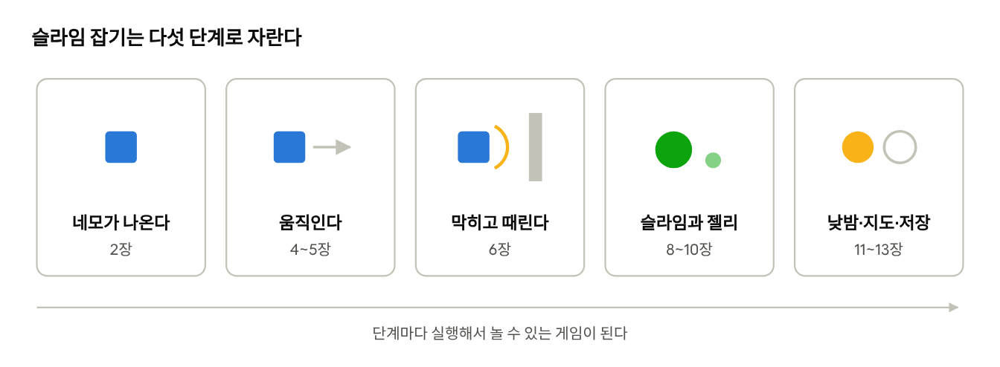
다 합치면 Python으로 250줄 정도예요. 노크우드는 이것보다 훨씬 크지만, 뼈대는 이 작은 게임과 같아요.
각 장을 읽는 법
모든 장은 같은 순서로 되어 있어요.
- 이 장에서 배울 것: 두세 줄 요약
- 개념: 이 부품이 어떤 문제를 푸는지 일상의 비유로
- 말로 먼저 쓰기: 코드 전에 한국어로 순서를 적기
- Python → C → 노크우드: 같은 생각을 세 언어로. 코드 아래에 "한 줄씩 보기"가 있어요.
- 흔한 실수와 직접 해보기
AI로 만들어도 코딩을 알아야 하는 이유
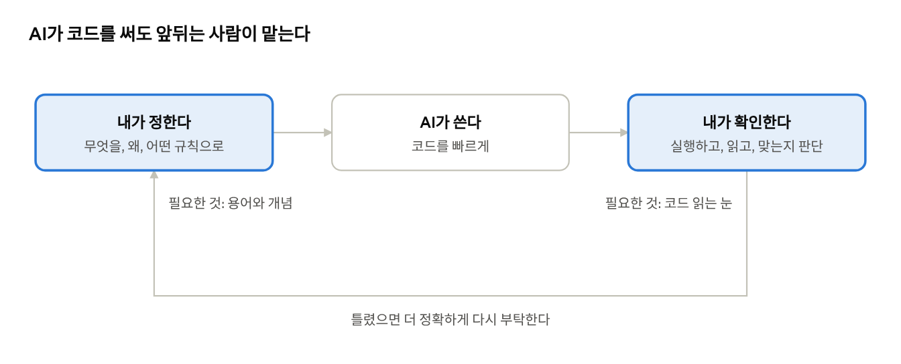
AI는 그럴듯하게 틀린다
AI가 쓴 코드는 대부분 잘 돌아가요. 문제는 틀린 코드도 잘 돌아가는 것처럼 보인다는 거예요. 예를 들어 "슬라임이 플레이어를 쫓아오게 해 줘"라고 하면 이런 코드가 나올 수 있어요.
# 그럴듯해 보이지만 문제가 세 개 있는 코드
dx = player_x - slime_x
dy = player_y - slime_y
dist = math.hypot(dx, dy)
slime_x += dx / dist * 2 # ① 프레임마다 2픽셀
slime_y += dy / dist * 2 # ② 거리가 0이면?
if dist < 20:
player_hp -= 1 # ③ 닿아 있는 동안 1초에 60번
내 컴퓨터에서 켜 보면 슬라임이 잘 쫓아와요. 그래서 넘어가기 쉽지만, 이 책을 읽은 사람은 바로 보여요.
| 번호 | 문제 | 언제 터지나 | 몇 장에서 배우나 |
|---|---|---|---|
| ① | dt가 없다 | 친구의 빠른 컴퓨터에서 슬라임이 달려옴 | 4장 |
| ② | 0으로 나눌 수 있다 | 슬라임과 같은 자리에 서는 순간 게임이 멈춤 | 8장 |
| ③ | 공격 간격·무적 시간이 없다 | 슬라임에 닿자마자 즉사 | 8장, 9장 |
이 세 가지는 놀아 보기만 해서는 바로 안 보여요. 코드를 읽을 줄 알아야 미리 막을 수 있어요.
알아야 하는 네 가지 이유
- 정확하게 부탁할 수 있다. "캐릭터가 이상하게 움직여"보다 "대각선 이동에 정규화가 빠졌어"라고 말하면 AI가 한 번에 고쳐요. 용어를 아는 만큼 대화가 짧아져요.
- 틀린 걸 알아챈다. 위 예처럼 그럴듯한 실수를 출시 전에 잡아요.
- 막혔을 때 빠져나온다. AI가 같은 버그를 고치다 망가뜨리기를 반복할 때가 있어요. 그때 "원인은 저장 파일 형식이 바뀐 거야"처럼 방향을 짚어 주는 건 사람의 일이에요.
- 큰 결정은 사람이 한다. "판정은 호스트 한 곳에서"(14장), "저장 형식에 버전 번호"(13장) 같은 결정은 나중에 바꾸기 아주 비싸요. AI는 지금 부탁받은 것만 만들지, 한 달 뒤 게임을 생각해 주지 않아요.
노크우드도 AI와 함께 만들어요
사실 노크우드의 코드도 대부분 AI(Claude Code)가 썼어요. 대신 만드는 사람은 이런 일을 해요.
| 사람이 하는 일 | 노크우드에서는 |
|---|---|
| 무엇을 만들지 정한다 | 기획 문서와 상세 규칙 문서를 쓴다 |
| 한 번에 할 일을 정한다 | 작업서(예: 저장 작업, 오프닝 작업)를 따로 쓴다 |
| 결과를 검토한다 | 화면 캡처와 보고를 보고 고칠 점을 짚는다 |
| 중요한 것을 승인한다 | 코드 주석의 "사용자 승인", "[임시값]" 표시 |
이 책에 나오는 주석 중 "2026-11-01 사용자 승인" 같은 표시가 바로 그 흔적이에요. AI가 제안하고, 사람이 읽고 고르고 승인한 거예요. 코드를 직접 다 치지 않아도, 읽고 판단할 수는 있어야 하는 이유예요.
얼마나 알아야 하나
문법을 외울 필요는 없어요. 이 책의 목표는 이 정도예요.
- AI가 준 코드를 보고 어느 부분이 입력·규칙·그리기인지 나눌 수 있다 (1장)
- 상태가 어느 변수에 담겨 있는지 찾을 수 있다
- 이 책의 "흔한 실수"를 체크리스트처럼 갖다 대 볼 수 있다
- 원하는 것을 이 책의 용어로 부탁할 수 있다 (dt, 정규화, 상태 기계, 시드, 호스트 판정…)
AI에게 부탁하는 법: 나쁜 예와 좋은 예
나쁜 예
슬라임 게임 만들어 줘.
좋은 예
Python + pygame으로 슬라임 한 마리를 추가해 줘.
- 상태는 대기 → 추적 → 공격 → 귀환 (시야 220px, 닿는 거리 20px)
- 이동은 속도 × dt, 방향은 정규화
- 공격은 1초 간격, 플레이어는 맞으면 0.8초 무적
- 벽 충돌은 이미 있는 move_with_walls 함수를 쓸 것
- 다른 파일은 고치지 말 것
좋은 예는 이 책 1~8장의 내용을 그대로 담은 부탁이에요. 책을 읽을수록 부탁이 좋아지고, 부탁이 좋아질수록 AI가 더 잘 만들어요.
✓직접 해보기
- 위의 "문제가 세 개 있는 코드"를 이 책을 다 읽은 뒤 다시 보세요. 다른 문제도 보이나요?
- AI에게 코드를 받을 때마다 "이 코드에서 입력·규칙·그리기는 각각 어디야?"라고 물어 보세요. 설명을 듣는 것도 좋은 공부예요.
0장 정리
- AI는 코드를 빨리 쓰지만, 그럴듯하게 틀린 코드도 잘 돌아가는 것처럼 보인다.
- 무엇을 만들지 정하고 결과가 맞는지 판단하는 일은 사람의 몫이다.
- 이 책의 용어로 부탁할수록 AI의 결과가 좋아진다.
| 바이브 코딩 | AI에게 말로 부탁해 코드를 받아 만드는 방식 |
|---|---|
| 코드 리뷰 | 받은 코드를 읽고 맞는지, 위험한 곳은 없는지 확인하는 일 |
확인 문제
AI가 준 슬라임 추적 코드가 내 컴퓨터에서 잘 돌아갔다. 그래도 확인해야 하는 이유로 가장 알맞은 것은?
- A. AI는 항상 틀리기 때문에
- B. 내 컴퓨터에서만 잘 도는 실수(dt 누락 등)는 놀아 보기만 해서는 안 보이기 때문에
- C. 코드 줄 수가 너무 많아서
- D. 확인하지 않으면 실행이 안 되어서
"캐릭터가 이상하게 움직여"를 더 좋은 부탁으로 바꿔 보세요.
정답과 해설은 부록 A에 있어요.
게임은 무엇으로 이루어져 있나
게임은 플립북이다
공책 구석에 그림을 조금씩 다르게 그리고 휘리릭 넘기면 그림이 움직여요. 게임도 똑같아요. 화면을 1초에 60장씩 새로 그리는 거예요. 이 한 장을 프레임이라고 불러요.
플립북과 다른 점은 다음 장을 미리 그려 두지 않는다는 것이에요. 매 프레임마다 이렇게 물어봐요.
- 입력 읽기: 플레이어가 지금 무슨 키를 누르고 있지?
- 규칙 적용: 그럼 캐릭터는 어디로 가야 하지? 벽에 부딪혔나? 적에게 맞았나?
- 그리기: 바뀐 대로 화면을 다시 그리자.
그리고 다시 1번으로 돌아가요. 이 끝없는 반복을 게임 루프라고 해요.
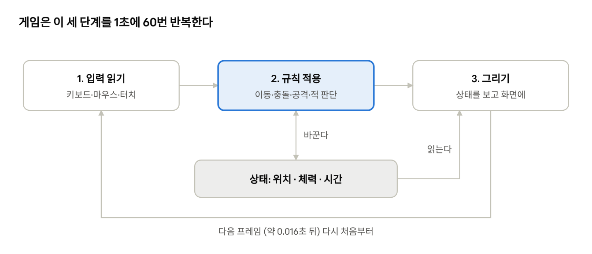
가운데 "규칙 적용"이 게임마다 달라지는 부분이고, 나머지 둘은 거의 모든 게임이 비슷해요. 그리기는 상태를 바꾸지 않고 읽기만 해요.
상태: 게임이 기억하는 것들
프레임과 프레임 사이에 게임은 무언가를 기억하고 있어야 해요. 플레이어가 어디 있는지, 체력이 몇인지 같은 것들이에요. 이걸 상태라고 불러요. 코드에서는 변수에 담아요.
변수는 이름표가 붙은 상자라고 생각하면 돼요.
| 상자 이름(변수) | 든 것(값) | 뜻 |
|---|---|---|
player_x | 320 | 플레이어의 가로 위치(픽셀) |
player_y | 240 | 세로 위치. 아래로 갈수록 커져요 |
hp | 5 | 남은 체력 |
cooldown | 0.3 | 다음 공격까지 남은 초 |
화면의 좌표는 수학 시간과 하나가 달라요. 왼쪽 위 구석이 (0, 0)이고, y는 아래로 갈수록 커져요. 거의 모든 게임 도구가 이렇게 해요.
노크우드에서 찾아보기
노크우드의 플레이어 파일(scripts/player.gd) 위쪽에는 상태 변수가 줄지어 있어요. 몇 개만 볼게요.
var health: int = max_health # 지금 체력
var hunger := -1 # 배고픔 (-1이면 이 맵에서는 배고픔 없음)
var facing := Vector2.DOWN # 바라보는 방향 (처음에는 아래)
var attack_cooldown: float = 0.0 # 다음 공격까지 남은 초
var hurt_left: float = 0.0 # 맞은 뒤 무적 시간이 몇 초 남았나
눈여겨 볼 것은 hunger := -1이에요. "없음"을 뜻하는 특별한 값을 정해 둬요. 배고픔이 없는 연습용 맵에서도 같은 플레이어 코드를 쓰기 위해서예요.
✓직접 해보기
- 좋아하는 게임 하나를 골라, 그 게임이 기억하고 있을 상태를 10개 적어 보세요. (예: 마리오라면 위치, 목숨 수, 코인 수, 남은 시간…)
- 그 게임에서 점프 버튼을 눌렀을 때 입력 → 규칙 → 그리기가 각각 무슨 일을 할지 한 줄씩 적어 보세요.
1장 정리
- 게임은 입력 읽기 → 규칙 적용 → 그리기를 1초에 수십 번 반복한다(게임 루프).
- 프레임 사이에 기억해야 하는 것들을 상태라고 하고, 변수에 담는다.
- 화면 좌표는 왼쪽 위가 (0, 0)이고 y는 아래로 갈수록 커진다.
| 프레임 | 화면에 한 번 그리는 한 장면 |
|---|---|
| 게임 루프 | 입력 → 규칙 → 그리기를 끝없이 반복하는 구조 |
| 상태 | 프레임 사이에 게임이 기억하는 값들 |
| 변수 | 이름표가 붙은 값 상자 |
확인 문제
게임 루프의 세 단계를 순서대로 쓰세요.
다음 중 '그리기' 단계가 하면 안 되는 일은?
- A. 플레이어 위치를 보고 네모를 그린다
- B. 체력 막대를 그린다
- C. 체력을 1 줄인다
- D. 배경을 칠한다
화면에서 (100, 50)과 (100, 200) 중 더 아래에 있는 점은?
정답과 해설은 부록 A에 있어요.
도구 고르기와 첫 창 띄우기
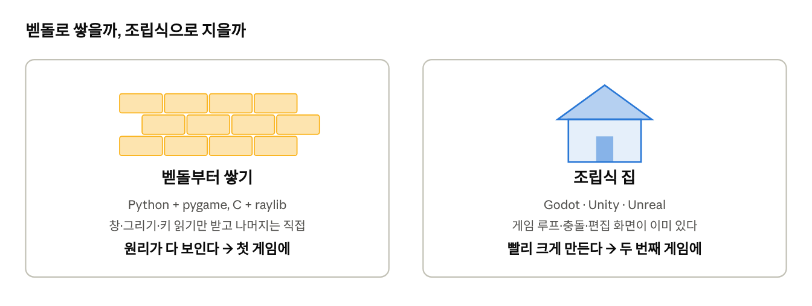
도구는 두 종류다
| Python + pygame | C + raylib | Godot | |
|---|---|---|---|
| 코드 읽기 | 가장 쉬움 | 기호가 많음 | 쉬움(Python과 비슷) |
| 첫 창까지 | 15줄 정도 | 15줄 정도 | 코드 없이 클릭으로 |
| 게임 루프 | 직접 작성 | 직접 작성 | 엔진이 대신 |
| 충돌 | 직접 계산 | 간단한 함수 제공 | 물리 엔진 내장 |
| 큰 게임(맵 편집, 휴대폰) | 힘듦 | 가능하지만 손이 많이 감 | 잘 됨 |
| 추천 용도 | 첫 게임, 개념 익히기 | 컴퓨터 원리 이해 | 제대로 된 게임 완성 |
추천 순서: Python으로 이 책의 예제를 끝까지 만들어 보세요. 그다음에 Godot로 옮기면, 엔진이 무엇을 대신 해 주는지 정확히 보여요. 노크우드도 Godot로 만들고 있어요.
준비물
- Python: python.org에서 Python을 설치한 뒤, 명령 창에
pip install pygame을 입력해요. - C: raylib.com에서 Windows용 설치 파일을 받아요. 코드를 실행 파일로 바꿔 주는 컴파일러가 함께 들어 있어요.
- Godot: godotengine.org에서 받아 압축만 풀면 바로 실행돼요.
말로 먼저 쓰기
코드를 치기 전에 하고 싶은 일을 한국어로 적어 봐요. 이걸 의사 코드라고 해요. 어느 언어로 짤든 이 순서는 같아요.
- 창을 띄운다 (가로 640, 세로 480)
- 창이 닫히지 않은 동안 반복한다
- 화면을 초록색으로 칠한다
- 가운데에 노란 네모를 그린다
- 그린 걸 화면에 보여 준다
- 창을 닫는다
Python으로
import pygame # pygame 도구상자를 가져온다
pygame.init() # 도구상자를 연다
screen = pygame.display.set_mode((640, 480)) # 1) 창을 띄운다
running = True
while running: # 2) 반복
for event in pygame.event.get():
if event.type == pygame.QUIT: # 닫기 버튼을 눌렀으면
running = False # 반복을 멈추게 표시
screen.fill((80, 140, 80)) # 2-1) 초록색으로 칠하기
pygame.draw.rect(screen, (240, 220, 160), (308, 228, 24, 24)) # 2-2) 네모
pygame.display.flip() # 2-3) 화면에 보여 주기
pygame.quit() # 3) 닫기
한 줄씩 보기
while running:이 게임 루프예요.running이True인 동안 안쪽을 계속 반복해요.pygame.event.get()은 "지난 번 이후로 일어난 일" 목록이에요. 창 닫기, 키 누름 같은 일이 들어 있어요. 이걸 읽지 않으면 창이 멈춘 것처럼 보여요.- 색은
(빨강, 초록, 파랑)을 0~255로 적어요.(80, 140, 80)은 풀색이에요. - 네모는
(왼쪽, 위, 너비, 높이)로 적어요. 가운데(320, 240)에 두려면 너비의 절반(12)을 빼서 308, 228에서 시작해요. flip()은 뒷면에 몰래 그린 그림을 한 번에 앞으로 뒤집어요. 그리는 중간 모습이 보이면 화면이 깜빡이기 때문이에요.
C로
#include "raylib.h" // raylib 도구상자를 가져온다
int main(void) { // C 프로그램은 main에서 시작한다
InitWindow(640, 480, "Slime Catch"); // 1) 창을 띄운다
SetTargetFPS(60); // 1초에 60번만 반복하게
while (!WindowShouldClose()) { // 2) 닫기를 누르지 않은 동안 반복
BeginDrawing();
ClearBackground((Color){80, 140, 80, 255}); // 2-1) 초록색
DrawRectangle(308, 228, 24, 24, (Color){240, 220, 160, 255}); // 2-2) 네모
EndDrawing(); // 2-3) 보여 주기
}
CloseWindow(); // 3) 닫기
return 0;
}
한 줄씩 보기
- C는 문장 끝마다
;를 붙이고, 묶음을{ }로 감싸요. Python은 들여쓰기로 묶음을 나타내고요. 모양만 다르고 하는 일은 같아요. - 색에 네 번째 숫자
255가 있어요. 투명도예요(255 = 완전히 보임). BeginDrawing()과EndDrawing()사이가 "그리기" 단계예요.EndDrawing()이 Python의flip()과 같은 일을 해요.
노크우드에서는 (Godot)
Godot에서는 이 코드를 쓰지 않아요. 창 크기는 설정 파일에 적고, 네모는 편집 화면에서 끌어다 놓아요. 노크우드의 설정 파일(project.godot)에는 이렇게 되어 있어요.
[application]
run/main_scene="res://scenes/main_menu.tscn" ; 게임을 켜면 처음 보여 줄 화면(장면)
[display]
window/size/viewport_width=960 ; 기준 화면 너비
window/size/viewport_height=640 ; 기준 화면 높이
window/stretch/mode="canvas_items" ; 창을 키우면 그림도 같이 커진다
Godot는 게임을 장면(scene)과 노드(node)로 나눠요. 노드는 부품 하나(그림, 충돌 모양, 카메라…)이고, 장면은 부품을 모아 둔 묶음이에요. 노크우드의 플레이어도 "몸 그림 + 충돌 모양 + 카메라"를 묶은 장면이고, 그 위에 player.gd 코드가 붙어 있어요.
!흔한 실수
- 창이 뜨자마자 꺼져요. 반복(
while)을 빼먹었을 때예요. 게임은 반복이 있어야 살아 있어요. - 창이 멈춘 것 같아요(응답 없음). Python에서 이벤트를 읽지 않으면 운영체제가 "이 프로그램이 멈춘 것 같다"고 판단해요.
- 화면이 까맣기만 해요.
flip()이나EndDrawing()을 빼먹었을 때예요.
✓직접 해보기
- 네모를 오른쪽 아래 구석으로 옮겨 보세요. 좌표를 어떻게 바꿔야 할까요?
- 배경을 밤하늘색
(20, 24, 48)로 바꿔 보세요. - 네모를 하나 더 그려 보세요. 그리는 순서를 바꾸면 겹친 부분에서 무엇이 달라지나요?
2장 정리
- 도구는 '언어 + 라이브러리'와 '게임 엔진' 두 종류가 있다.
- 언어 + 라이브러리는 원리가 다 보이고, 엔진은 빨리 크게 만들 수 있다.
- 어느 도구든 첫 목표는 창을 띄우고 네모 하나를 그리는 것이다.
| 라이브러리 | 창 띄우기, 그리기 같은 기능을 모아 둔 도구상자 |
|---|---|
| 게임 엔진 | 게임 루프·충돌·편집 화면까지 갖춘 제작 도구 |
| 의사 코드 | 코드를 쓰기 전에 사람 말로 적은 순서 |
| 장면과 노드 | Godot에서 부품(노드)과 부품 묶음(장면) |
확인 문제
Python 예제에서 pygame.display.flip()을 빼먹으면 어떻게 될까요?
처음 게임을 만드는 사람에게 이 책이 추천하는 순서는?
- A. Unreal로 3D 게임부터
- B. Python으로 예제를 끝까지 만든 뒤 Godot로 옮기기
- C. C로 엔진부터 직접 만들기
- D. 메뉴 화면부터 만들기
네모 크기가 24×24일 때, 화면 가운데 (320, 240)에 놓으려면 왼쪽 위 좌표는?
정답과 해설은 부록 A에 있어요.
첫 게임은 작게, 그리고 끝까지
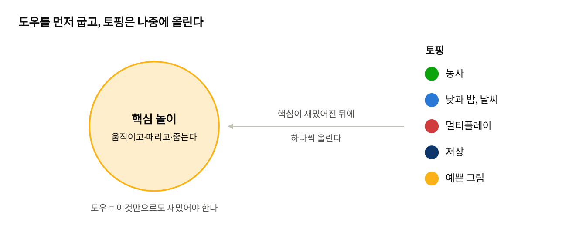
꼭 필요한 것만 남기기
"오픈월드에 농사도 하고 친구랑 같이 하는 게임"을 첫 게임으로 잡으면 대부분 중간에 멈춰요. 할 일이 너무 많아서, 무엇부터 해야 할지 모르게 되거든요.
그래서 먼저 이 질문에 답해 봐요.
이걸 핵심 놀이(코어 루프)라고 해요. 슬라임 잡기라면 "움직여서 슬라임을 피하고, 때리고, 젤리를 줍는다"예요. 농사도, 날씨도, 멀티플레이도 없어요. 그건 핵심이 재밌어진 다음에 붙여요.
노크우드는 어떻게 시작했나
노크우드는 지금 2048×2048칸 섬이지만, 처음부터 그랬던 게 아니에요. 지금도 처음 만든 개발용 작은 맵(scripts/test_map.gd)이 남아 있어요. 파일 맨 위에 이렇게 적혀 있어요.
## 개발용 고정 맵. 최종 랜덤 월드/건축 시스템이 아니다.
const MAP_SIZE := Vector2(1920, 1280)
const ENEMY_SPAWNS: Array[Vector2] = [Vector2(520, 320), Vector2(900, 440), Vector2(1120, 960)]
const WALLS: Array[Rect2] = [
Rect2(0, 0, 1920, 32), Rect2(0, 1248, 1920, 32),
Rect2(640, 320, 48, 512), Rect2(960, 640, 480, 48),
# ...
]
한 줄씩 보기
- 맵 크기는 고정이에요. 자동으로 만드는 세계는 한참 뒤의 일이었어요.
- 적은 정해진 자리 3곳에만 나와요.
- 벽은 그림이 아니라 사각형 숫자 네 개(
Rect2(왼쪽, 위, 너비, 높이))예요. 예쁜 그림은 움직임과 충돌이 제대로 된 다음에 입혔어요.
슬라임 코드(scripts/enemy.gd) 첫 줄에는 이런 설명이 있어요.
## 임시 원류 생물 도형. 가까운 플레이어에게만 반응하며 경로 탐색은 하지 않는다.
"임시 도형"이라는 말이 핵심이에요. 처음에는 동그라미였고, 벽을 돌아가는 똑똑한 길찾기도 없었어요. 그래도 싸움이 재밌는지는 충분히 시험할 수 있었어요.
만드는 순서
어떤 게임이든 아래 순서를 추천해요. 각 단계가 끝날 때마다 게임을 실행해서 놀 수 있어야 해요.
- 네모 하나가 움직인다 — 게임 루프, 입력 (4~5장)
- 무언가에 막히고, 무언가를 때린다 — 충돌, 판정 (6장)
- 상대가 있다 — 적 (8장)
- 대가가 있다 — 아이템, 점수 (10장)
- 기분이 좋다 — 손맛, 소리 (9장)
- 더 넓고 오래 — 시간, 맵 생성, 저장 (11~13장)
- 같이 — 멀티플레이 (14장)
그림은 언제 그릴까요? 네모와 동그라미로 1~3단계를 먼저 끝내는 걸 추천해요. 그림을 먼저 그리면, 나중에 규칙이 바뀔 때 그림을 다시 그려야 할 때가 많아요.
기록하면서 만들기
노크우드는 코드 옆에 문서를 함께 둬요. 큰 게임을 멈추지 않고 끝까지 만드는 비결이에요.
| 문서 | 담는 것 | 처음 만들 때는 |
|---|---|---|
GAME_PROJECT_BRIEF.md | 어떤 게임인지, 꼭 지킬 것 | 한 장짜리 메모로 충분 |
NOOKWOOD_DETAIL_SPEC.md | 규칙과 숫자의 자세한 설명 | 지금은 없어도 돼요 |
PROGRESS.md | 언제 무엇을 했는지 | 날짜 + 한 줄씩 |
코드 주석도 비슷한 역할을 해요. 노크우드의 주석에는 [임시값], 2026-11-01 사용자 승인 같은 표시가 자주 보여요. "이 숫자는 아직 확정이 아니다", "이건 이런 이유로 정했다"를 남겨 두는 거예요. 한 달 뒤의 나는 지금의 내가 왜 그랬는지 기억하지 못하거든요.
!흔한 실수
- 메뉴 화면부터 만들기. 만들기 쉽고 보람도 있지만, 게임이 재밌는지는 알려 주지 않아요.
- 다 만든 뒤에 처음 실행하기. 문제가 한꺼번에 쏟아져서 어디가 잘못됐는지 찾기 어려워요. 조금 고치고 바로 실행하는 습관을 들이세요.
- 한 번에 여러 가지 고치기. 고친 뒤 게임이 깨지면 무엇 때문인지 모르게 돼요.
✓직접 해보기
- 만들고 싶은 게임의 핵심 놀이를 한 문장으로 적어 보세요.
- 그 게임에 넣고 싶은 기능을 모두 적고, "핵심 놀이에 꼭 필요한가?"로 거르세요. 남은 것이 첫 버전이에요.
- 메모장에
진행 기록파일을 만들고 오늘 날짜와 "2장 끝: 창 띄움"을 적어 보세요.
3장 정리
- 첫 게임이 멈추는 가장 큰 이유는 실력이 아니라 크기다.
- 핵심 놀이(30초 동안 반복하는 행동)를 먼저 만들고 재밌어진 뒤에 기능을 붙인다.
- 단계마다 실행해서 놀 수 있게 만들고, 기록을 남긴다.
| 핵심 놀이(코어 루프) | 플레이어가 짧은 시간 동안 반복하는 중심 행동 |
|---|---|
| 임시 도형 | 그림 대신 쓰는 네모·동그라미 |
| [임시값] | 아직 확정하지 않은 숫자라는 표시 |
확인 문제
다음 중 '슬라임 잡기'의 핵심 놀이에 들어가지 않는 것은?
- A. 움직이기
- B. 슬라임 때리기
- C. 젤리 줍기
- D. 친구와 멀티플레이
그림보다 네모·동그라미로 먼저 만드는 이유는?
한 번에 여러 가지를 고치면 생기는 문제는?
정답과 해설은 부록 A에 있어요.
게임 루프와 시간
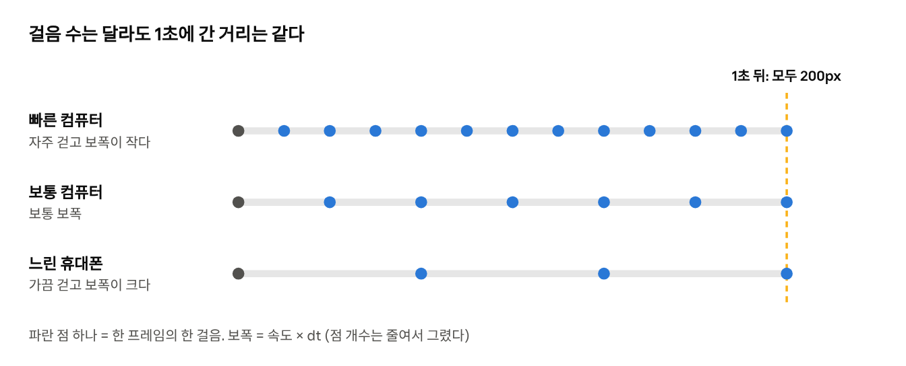
개념: 컴퓨터마다 빠르기가 다르다
네모를 오른쪽으로 움직이고 싶다고 해 볼게요. 가장 쉽게 떠오르는 방법은 이거예요.
player_x = player_x + 3 # 프레임마다 3픽셀씩
문제는 프레임 수가 컴퓨터마다 다르다는 것이에요.
| 컴퓨터 | 1초에 도는 횟수 | 1초에 간 거리(+3씩) | 1초에 간 거리(200 × dt) |
|---|---|---|---|
| 빠른 컴퓨터 | 144번 | 432픽셀 | 200픽셀 |
| 보통 컴퓨터 | 60번 | 180픽셀 | 200픽셀 |
| 느린 휴대폰 | 30번 | 90픽셀 | 200픽셀 |
해결책은 "지난 프레임부터 몇 초가 흘렀나(dt)"를 계산에 넣는 것이에요. 60번 도는 컴퓨터에서는 dt가 약 0.016초, 30번 도는 컴퓨터에서는 약 0.033초예요. 느린 컴퓨터는 한 번에 더 많이 가서, 결국 1초에 간 거리가 같아져요.
말로 먼저 쓰기
- 속도를 정한다: 1초에 200픽셀
- 반복할 때마다
- 지난 번부터 흐른 초(dt)를 잰다
- 위치 = 위치 + 속도 × dt
- 공격 대기 시간 = 공격 대기 시간 − dt (단, 0 밑으로는 안 내려감)
Python으로
clock = pygame.time.Clock() # 시계를 하나 만든다
player_x = 100.0
speed = 200.0 # 1초에 200픽셀
cooldown = 0.0 # 다음 공격까지 남은 초
while running:
dt = clock.tick(60) / 1000.0 # 지난 프레임부터 흐른 시간(초)
player_x = player_x + speed * dt # 속도 × 시간 = 간 거리
cooldown = max(0.0, cooldown - dt)
if cooldown == 0.0:
print("공격 가능!")
한 줄씩 보기
clock.tick(60)은 두 가지 일을 해요. 1초에 60번보다 빨리 돌지 않게 잠깐 기다려 주고, 지난 번 이후 흐른 시간을 밀리초(1/1000초)로 알려 줘요. 그래서 1000으로 나눠 초로 바꿔요.speed * dt는 초등학교에서 배운 "거리 = 속력 × 시간"이에요.max(0.0, cooldown - dt)는 "빼되, 0보다 작아지지 않게"라는 뜻이에요. 이게 없으면 cooldown이 -5.3 같은 이상한 값이 돼요.
C로
float player_x = 100;
float speed = 200; // 1초에 200픽셀
float cooldown = 0; // 다음 공격까지 남은 초
while (!WindowShouldClose()) {
float dt = GetFrameTime(); // 지난 프레임부터 흐른 시간(초)
player_x = player_x + speed * dt;
cooldown = fmaxf(0, cooldown - dt); // math.h의 "둘 중 큰 값"
// ... 그리기 ...
}
한 줄씩 보기
- C는 변수를 만들 때 상자의 종류를 적어야 해요.
float는 소수가 들어가는 상자,int는 정수만 들어가는 상자예요. - 위치를
int로 만들면 0.016 × 200 = 3.2에서 0.2가 매번 버려져요. 위치·속도·시간은 소수(float)로 들고, 그릴 때만 정수로 바꿔요. - raylib은
GetFrameTime()이 dt를 직접 초 단위로 줘요.
노크우드에서는 (Godot)
Godot는 게임 루프를 엔진이 돌려줘요. 우리는 루프 안에서 할 일만 정해요. 이름이 정해진 함수를 만들어 두면 엔진이 매 프레임 불러 줘요.
| 함수 | 언제 불리나 | 무엇을 넣나 |
|---|---|---|
_ready() | 처음 한 번 | 처음 설정(체력 채우기 등) |
_physics_process(delta) | 1초에 60번, 일정하게 | 이동·충돌·공격 같은 규칙 |
_process(delta) | 화면을 그릴 때마다 | 애니메이션, 숫자 뜨기 같은 보여주기 |
_draw() | 다시 그려달라고 했을 때 | 선·동그라미 직접 그리기 |
노크우드의 플레이어 코드에서 시간을 다루는 부분을 봐요(scripts/player.gd, 줄임).
func _physics_process(delta: float) -> void:
attack_cooldown = maxf(0.0, attack_cooldown - delta)
swing_left = maxf(0.0, swing_left - delta)
hurt_left = maxf(0.0, hurt_left - delta)
$Body.modulate = Color("ff7373") if hurt_left > 0.0 else Color.WHITE
# ... 입력, 이동, 공격 ...
한 줄씩 보기
- Python 예제의
max(0.0, cooldown - dt)와 모양까지 같아요. 언어가 달라도 생각은 같다는 걸 다시 확인할 수 있어요. attack_cooldown(다음 공격까지),swing_left(휘두르는 모습이 보일 시간),hurt_left(맞은 뒤 무적 시간). 세 가지 모두 같은 "남은 시간" 패턴이에요.- 마지막 줄은 상태가 그림을 정하는 예예요. 무적 시간이 남아 있으면 몸을 붉게, 아니면 원래 색으로 칠해요.
"남은 시간" 패턴 하나로 쿨타임, 무적, 버프, 독, 부활 대기 대부분을 만들 수 있어요. 타이머를 따로 만들 필요가 없어요.
!흔한 실수
- dt를 곱하지 않는 것. 내 컴퓨터에서는 괜찮은데 친구 컴퓨터에서는 캐릭터가 달려가요.
- 프레임 수로 시간 세기. "60프레임 뒤에 공격 가능"처럼 세면 느린 컴퓨터에서는 2초가 돼요. 시간은 항상 초로 세요.
- 루프 안에서 무거운 일 하기. 파일 읽기처럼 느린 일을 매 프레임 하면 게임이 끊겨요. 한 번만 하고 결과를 변수에 저장해 두세요(7장).
✓직접 해보기
- Python 예제에서
clock.tick(60)을clock.tick(20)으로 바꿔 보세요. 화면은 끊겨 보여도 네모가 1초에 가는 거리는 그대로예요. - 이번에는
speed * dt대신3을 더하고 같은 실험을 해 보세요. 무엇이 달라지나요? - 네모가 화면 오른쪽 끝에 닿으면 왼쪽으로 돌아오게 해 보세요. (힌트:
speed를-speed로)
4장 정리
- 컴퓨터마다 1초에 도는 횟수가 다르므로, 움직임은 '속도 × dt'로 계산한다.
- dt는 지난 프레임부터 흐른 시간(초)이다.
- '남은 시간' 변수 하나를 dt만큼 깎는 방식으로 쿨타임·무적·버프를 만든다.
| dt (delta) | 지난 프레임부터 흐른 시간(초) |
|---|---|
| FPS | 1초에 그리는 프레임 수 |
| 쿨타임 | 다음 행동까지 기다려야 하는 시간 |
| _physics_process | Godot에서 규칙을 일정 간격으로 처리하는 함수 |
확인 문제
속도가 200픽셀/초이고 dt가 0.05초라면 이번 프레임에 몇 픽셀 움직일까요?
위치를 정수(int)로 저장하면 생기는 문제는?
- A. 계산이 빨라진다
- B. 매 프레임 소수점 아래가 버려져 느리게 움직이거나 멈춘다
- C. 아무 문제 없다
- D. 화면이 깜빡인다
cooldown = max(0, cooldown - dt)에서 max를 쓰는 이유는?
정답과 해설은 부록 A에 있어요.
입력과 이동
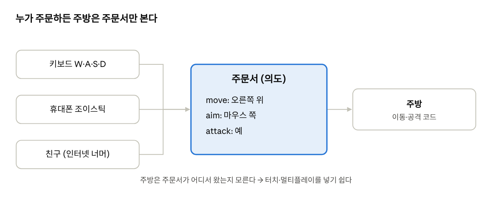
개념 1: 방향은 화살표다
키보드 입력을 방향 화살표로 바꾸면 계산이 쉬워져요. 화살표는 (가로, 세로) 두 숫자예요.
| 누른 키 | 가로(x) | 세로(y) |
|---|---|---|
| D(오른쪽) | 1 | 0 |
| A(왼쪽) | -1 | 0 |
| W(위) | 0 | -1 |
| S(아래) | 0 | 1 |
| W + D(오른쪽 위) | 1 | -1 |
그런데 마지막 줄에 함정이 있어요. (1, -1) 화살표의 길이는 1이 아니라 √2, 약 1.41이에요. 그대로 속도를 곱하면 대각선으로 갈 때 41% 더 빨라져요. 예전 게임들에 실제로 있던 유명한 버그예요.
해결책은 화살표의 길이로 나눠서 길이를 1로 맞추는 것이에요. 이걸 정규화라고 해요. 방향은 그대로고 길이만 1이 돼요.
개념 2: 입력을 "의도"로 바꾼다
키를 누른 자리에서 바로 캐릭터를 옮기지 말고, 먼저 "어느 쪽으로 가고 싶다, 공격하고 싶다"라는 메모를 만들어 두세요. 이걸 의도라고 부를게요.
말로 먼저 쓰기
- 가로 = (오른쪽 키 누름? 1:0) − (왼쪽 키 누름? 1:0)
- 세로 = (아래 키 누름? 1:0) − (위 키 누름? 1:0)
- 화살표 길이가 0보다 크면
- 길이로 나눠 길이를 1로 만든다
- 바라보는 방향을 이 화살표로 바꾼다
- 위치 = 위치 + 화살표 × 속도 × dt
Python으로
import math
keys = pygame.key.get_pressed() # 지금 눌려 있는 키 목록
mx = (keys[pygame.K_d] or keys[pygame.K_RIGHT]) - (keys[pygame.K_a] or keys[pygame.K_LEFT])
my = (keys[pygame.K_s] or keys[pygame.K_DOWN]) - (keys[pygame.K_w] or keys[pygame.K_UP])
length = math.hypot(mx, my) # 화살표 길이 (피타고라스 정리)
if length > 0:
mx, my = mx / length, my / length # 길이를 1로 (정규화)
facing = (mx, my) # 움직일 때만 바라보는 방향 갱신
player_x += mx * speed * dt
player_y += my * speed * dt
한 줄씩 보기
keys[pygame.K_d]는 D키가 눌려 있으면True, 아니면False예요. Python에서True - False는1이에요. 그래서 빼기 한 번으로 -1, 0, 1을 얻어요.or로 방향키도 같이 읽어요. WASD를 모르는 사람도 바로 할 수 있어요.math.hypot(mx, my)는 √(mx² + my²), 즉 화살표의 길이예요.if length > 0가 중요해요. 아무 키도 안 눌렀을 때 0으로 나누면 프로그램이 멈춰요. 또 멈춰 있을 때 바라보는 방향이 사라지지 않게 해줘요.
C로
float mx = (IsKeyDown(KEY_D) || IsKeyDown(KEY_RIGHT)) - (IsKeyDown(KEY_A) || IsKeyDown(KEY_LEFT));
float my = (IsKeyDown(KEY_S) || IsKeyDown(KEY_DOWN)) - (IsKeyDown(KEY_W) || IsKeyDown(KEY_UP));
float length = sqrtf(mx * mx + my * my); // 화살표 길이
if (length > 0) {
mx /= length; // mx = mx / length 와 같다
my /= length;
face_x = mx;
face_y = my;
}
player_x += mx * speed * dt;
player_y += my * speed * dt;
한 줄씩 보기
- C의
||는 Python의or예요. 참이면 1, 거짓이면 0을 돌려줘요. - C는 화살표(두 숫자 묶음)를 기본으로 모르니
mx,my두 변수로 나눠 들어요. sqrtf는 제곱근이에요. 파일 위에#include <math.h>가 필요해요.
노크우드에서는 (Godot)
키가 아니라 행동에 이름을 붙여요. 노크우드의 설정 파일에는 move_left 라는 행동이 있고, 여기에 A키와 왼쪽 방향키가 묶여 있어요. 코드는 "A키가 눌렸나"가 아니라 "왼쪽으로 가려는가"를 물어요. 키를 바꿔도 코드는 그대로예요.
func collect_input() -> Dictionary:
var direction := (Input.get_vector("move_left", "move_right", "move_up", "move_down") + touch_move).limit_length()
var aim := facing if direction.is_zero_approx() else direction.normalized()
# ... (마우스 방향으로 조준하는 부분 생략) ...
return {"move": direction, "aim": aim, "attack": attack}
한 줄씩 보기
Input.get_vector(왼, 오른, 위, 아래)는 Python에서 우리가 두 줄로 짠 일을 한 번에 해 줘요. 엔진이 대신 해 주는 일의 예예요.+ touch_move는 휴대폰 화면 조이스틱 방향이에요. 키보드 방향과 그냥 더해요..limit_length()는 "길이가 1을 넘으면 1로 자른다"예요. 정규화와 비슷하지만, 조이스틱을 살짝 밀면 천천히 걷는 것처럼 1보다 작은 값은 그대로 둬요.- 마지막 줄이 핵심이에요. 이 함수는 플레이어를 옮기지 않고 주문서(의도)만 돌려줘요.
그리고 주문서를 받는 쪽은 이렇게 생겼어요.
if network_enabled:
intent = {"move": network_move, "aim": network_aim, "attack": network_attack} # 친구의 주문서
else:
intent = collect_input() # 내 주문서
velocity = intent.move * move_speed * speed_factor
move_and_slide()
주문서가 어디서 왔든 아래 두 줄은 같아요. speed_factor 는 배고프면 느려지는 배율이에요. 속도에 배율을 곱하는 방식이라, 느려지게 하는 규칙을 더해도 이동 코드는 안 바뀌어요.
!흔한 실수
- 대각선이 더 빨라요. 정규화를 빼먹었어요.
- 멈추면 캐릭터가 아래를 봐요. 움직이지 않을 때도 방향을 (0, 0)으로 덮어썼어요. 움직일 때만 방향을 바꾸세요.
- 창을 열어 두고 클릭했는데 캐릭터가 공격해요. 노크우드는 버튼·창이 먼저 클릭을 받고, 아무도 안 받은 클릭만 공격으로 써요(
_unhandled_input). - 다른 창을 눌렀다 오니 공격이 멈추지 않아요. "버튼을 떼다" 신호를 못 받았기 때문이에요. 노크우드는 창이 포커스를 잃으면 공격 입력을 끄고, 매 프레임 실제 버튼 상태를 다시 확인해요.
✓직접 해보기
- 정규화 두 줄을 지우고 대각선으로 걸어 보세요. 빨라진 게 느껴지나요?
- Shift를 누르고 있으면 두 배로 달리게 해 보세요. 속도에 배율을 곱하면 돼요.
- 네모가 화면 밖으로 나가지 못하게 막아 보세요. (힌트:
player_x = max(12, min(628, player_x)))
5장 정리
- 키 입력을 방향 벡터(가로, 세로)로 바꾸면 계산이 쉬워진다.
- 대각선은 길이가 약 1.41이므로 정규화해서 길이를 1로 맞춘다.
- 입력을 바로 실행하지 않고 '의도(주문서)'로 만들면 터치·멀티플레이를 쉽게 붙일 수 있다.
| 벡터 | 방향과 크기를 함께 나타내는 (x, y) 숫자 묶음 |
|---|---|
| 정규화 | 방향은 그대로 두고 길이를 1로 맞추는 계산 |
| 의도(intent) | "어디로 가고 싶다, 공격하고 싶다"를 담은 입력 묶음 |
| 입력 맵 | 키가 아니라 행동에 이름을 붙이는 설정 |
확인 문제
W와 D를 함께 눌렀을 때 정규화 전 방향 벡터와 그 길이는?
멈춰 있을 때 바라보는 방향을 유지하려면?
- A. 매 프레임 방향을 (0, 0)으로 바꾼다
- B. 움직일 때만 방향을 바꾼다
- C. 방향을 저장하지 않는다
- D. 마우스를 숨긴다
노크우드가 입력을 '주문서'로 만든 덕분에 쉬워진 기능 두 가지는?
정답과 해설은 부록 A에 있어요.
충돌과 공격 판정
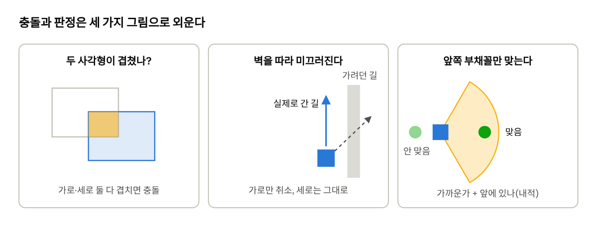
개념 1: 두 사각형이 겹쳤나?
게임의 충돌은 대부분 두 사각형이 겹쳤는지 묻는 것에서 시작해요. 두 사각형이 겹치려면 가로로도 겹치고 세로로도 겹쳐야 해요.
- 가로로 겹침: A의 왼쪽 끝이 B의 오른쪽 끝보다 왼쪽에 있고, B의 왼쪽 끝도 A의 오른쪽 끝보다 왼쪽에 있다.
- 세로도 똑같이.
개념 2: 벽에 막히면 미끄러진다
벽에 부딪히면 통째로 멈추는 게 가장 쉽지만, 해 보면 답답해요. 벽에 비스듬히 부딪히면 벽을 따라 미끄러져야 자연스러워요.
방법은 간단해요. 가로와 세로를 따로 움직여 보고, 벽에 걸리는 쪽만 취소해요. 오른쪽 위로 가다가 오른쪽 벽에 부딪히면, 가로 이동만 취소되고 위로는 계속 가요.
개념 3: 공격은 "거리 + 방향"
칼을 휘두르는 공격은 내 앞쪽 부채꼴 안에 있는 적만 맞아야 해요. 두 가지를 확인해요.
- 거리: 적이 충분히 가까운가?
- 방향: 적이 내가 바라보는 쪽에 있나?
방향을 비교할 때는 내적(dot) 이라는 계산을 써요. 어렵게 들리지만 뜻은 간단해요. 두 화살표(길이 1)가 얼마나 같은 쪽을 가리키는지 -1에서 1 사이 숫자로 알려줘요.
| 내적 값 | 뜻 |
|---|---|
| 1 | 정확히 같은 방향(정면) |
| 0.5 | 양쪽으로 60도 벌어짐 |
| 0 | 직각(옆) |
| -1 | 정반대(뒤) |
그래서 "내적이 0.5 이상"이면 정면 양쪽 60도, 합쳐서 120도 부채꼴이 돼요. 계산은 가로×가로 + 세로×세로 한 줄이에요.
말로 먼저 쓰기
이동
- 가로로만 움직여 본 자리가 벽과 겹치면 가로 이동을 취소한다
- 세로로만 움직여 본 자리가 벽과 겹치면 세로 이동을 취소한다
공격
- 공격 대기 시간이 남아 있으면 아무것도 안 한다
- 모든 적을 하나씩 보면서
- 거리가 멀면 넘어간다
- 내적이 0.5보다 작으면(옆이나 뒤) 넘어간다
- 남은 적의 체력을 1 줄인다
Python으로
WALLS = [(200, 150, 32, 180), (400, 300, 160, 32)] # (왼쪽, 위, 너비, 높이)
def overlaps(a, b):
# 두 사각형이 가로로도, 세로로도 겹치면 True
return a[0] < b[0] + b[2] and b[0] < a[0] + a[2] and \
a[1] < b[1] + b[3] and b[1] < a[1] + a[3]
def move_with_walls(x, y, dx, dy, size):
nx = x + dx # 가로로 먼저 가 본다
if any(overlaps((nx - size / 2, y - size / 2, size, size), w) for w in WALLS):
nx = x # 벽이면 가로 이동 취소
ny = y + dy # 그다음 세로
if any(overlaps((nx - size / 2, ny - size / 2, size, size), w) for w in WALLS):
ny = y # 벽이면 세로 이동 취소
return nx, ny
def try_attack(player, slimes):
fx, fy = player["facing"] # 바라보는 방향 (길이 1)
for s in slimes:
dx, dy = s["x"] - player["x"], s["y"] - player["y"]
dist = math.hypot(dx, dy)
if dist > 48: # 1) 너무 멀면 패스
continue
if dist > 0 and (dx * fx + dy * fy) / dist < 0.5: # 2) 옆이나 뒤면 패스
continue
s["hp"] -= 1 # 3) 맞았다!
한 줄씩 보기
- 플레이어 위치는 몸의 가운데예요. 그래서 사각형을 만들 때
x - size / 2처럼 너비의 절반을 빼서 왼쪽 위 구석을 구해요. any(... for w in WALLS)는 "벽 중 하나라도 겹치면"이에요.dx * fx + dy * fy가 내적이에요.dx, dy는 길이가 1이 아니라서 거리(dist)로 한 번 나눠 줘요.continue는 "이 적은 그만 보고 다음 적으로"라는 뜻이에요. 안 되는 경우를 먼저 걸러내면 코드가 읽기 쉬워져요.
C로
Rectangle walls[] = {{200, 150, 32, 180}, {400, 300, 160, 32}};
const int WALL_COUNT = 2;
int hits_wall(float x, float y, float size) {
Rectangle body = {x - size / 2, y - size / 2, size, size};
for (int i = 0; i < WALL_COUNT; i++)
if (CheckCollisionRecs(body, walls[i])) return 1; // raylib이 겹침을 계산해 준다
return 0;
}
void move_with_walls(float *x, float *y, float dx, float dy, float size) {
if (!hits_wall(*x + dx, *y, size)) *x += dx; // 가로 먼저
if (!hits_wall(*x, *y + dy, size)) *y += dy; // 그다음 세로
}
한 줄씩 보기
Rectangle은 raylib이 만들어 둔 "사각형 상자"예요. 안에 x, y, width, height가 들어 있어요.float *x의*는 포인터예요. C의 함수는 값을 복사해서 받기 때문에, 원래 변수를 바꾸려면 "상자의 주소"를 넘겨야 해요. 부를 때는move_with_walls(&player_x, &player_y, ...)처럼&를 붙여요. Python은 결과를return해서 다시 받았던 것과 같은 목적이에요.- C는 참/거짓을 1/0으로 돌려주는 게 오래된 습관이에요.
노크우드에서는 (Godot)
벽 충돌과 미끄러지기는 엔진이 해 줘요. 플레이어 코드에는 이 두 줄뿐이에요.
velocity = direction * move_speed * speed_factor # 가고 싶은 속도
move_and_slide() # 엔진: 움직이고, 부딪히면 미끄러지게
Python에서 15줄로 짠 일을 한 줄이 대신 해요. 대신 충돌 모양은 우리가 정해 줘야 해요.
공격 판정은 엔진이 알 수 없으니 직접 짰어요(scripts/player.gd 의 try_attack, 줄임).
for enemy in get_tree().get_nodes_in_group("enemies"):
var offset: Vector2 = enemy.global_position - global_position
if offset.length() > ATTACK_RANGE or offset.normalized().dot(facing) < 0.5:
continue
var ray := PhysicsRayQueryParameters2D.create(global_position, enemy.global_position, 1)
if get_world_2d().direct_space_state.intersect_ray(ray).is_empty():
hit(enemy, DAMAGE)
한 줄씩 보기
get_nodes_in_group("enemies")는 "적 목록"이에요. 슬라임은 태어날 때 스스로 이 목록에 이름을 올려요. 그래서 플레이어는 적이 몇 마리든 목록만 보면 돼요.- 두 번째 줄은 Python 예제의 "거리 + 내적 0.5"와 완전히 같아요.
ATTACK_RANGE는 64픽셀이에요. - 세 번째 검사가 하나 더 있어요.
ray는 나와 적 사이에 보이지 않는 선을 그어 보는 거예요. 선이 벽에 막히면 때리지 않아요. 이게 없으면 얇은 벽 너머 적을 때릴 수 있어요. 이걸 레이캐스트라고 해요. - 화면에 그리는 휘두르기 호도 같은 64픽셀, 양쪽 60도예요. 보이는 범위와 실제로 맞는 범위를 똑같이 맞추는 것이 손맛의 기본이에요.
그림과 몸은 다르다
탑다운 게임에서 나무 그림은 크지만, 부딪히는 몸은 밑동만 둬요. 그래야 나무 잎 뒤로 걸어 들어갈 수 있어요. 그리고 발이 더 아래 있는 것을 나중에 그려요. 나무 아래쪽에 서면 나무 앞에, 위쪽에 서면 나무 뒤에 보이게 하려면요.
노크우드는 물건이 수십 종류라 몸을 손으로 다 적지 않고, 그림을 재서 정해요(scripts/test_map_v02/object_layers.gd).
var image := texture.get_image()
var used := image.get_used_rect() # 투명하지 않은 픽셀이 있는 영역
lifts[key] = float(image.get_height() - used.end.y) # 그림 아래 빈 여백의 높이
그림 파일 아래쪽에 빈 여백이 있으면, 그만큼 "바닥선"을 올려요. 바닥선이 틀리면 물건이 떠 보이거나, 캐릭터가 엉뚱한 순서로 가려져요.
!흔한 실수
- 벽에 붙으면 꼼짝도 못 해요. 가로·세로를 한꺼번에 검사해서 통째로 취소했을 때예요. 따로 검사하세요.
- 너무 빠르면 벽을 뚫고 지나가요. 한 프레임에 벽 두께보다 더 멀리 가면 겹치는 순간이 없어요. 속도를 줄이거나 벽을 두껍게 하세요.
- 그림 크기 그대로 몸을 만들어요. 나무 잎에 걸려서 길이 답답해져요.
- 앞 나무가 체력 막대를 가려요. 노크우드도 겪었던 문제예요. 머리 위 표시만 따로 떼서 더 위 층에 그려서 해결했어요(
overhead_marks.gd).
✓직접 해보기
- 내적 기준
0.5를0으로 바꿔 보세요. 공격 범위가 반원이 돼요.-1이면 어떻게 될까요? - 공격할 때 화면에 부채꼴을 잠깐 그려 보세요. 보이는 범위와 실제 범위가 맞는지 눈으로 확인할 수 있어요.
- 벽을 하나 더 넣어 보세요.
WALLS목록에 사각형만 추가하면 돼요.
6장 정리
- 두 사각형은 가로와 세로가 모두 겹칠 때 충돌한다.
- 가로·세로를 따로 움직여 보고 벽에 걸리는 쪽만 취소하면 벽을 따라 미끄러진다.
- 공격은 거리와 방향(내적)으로 판정하고, 보이는 범위와 실제 판정 범위를 맞춘다.
| 충돌 판정 | 두 물체가 겹쳤는지 계산하는 일 |
|---|---|
| 내적(dot) | 두 방향이 얼마나 같은 쪽을 가리키는지 -1~1로 나타내는 값 |
| 레이캐스트 | 두 점 사이에 보이지 않는 선을 그어 막힌 곳이 있는지 보는 검사 |
| y 정렬 | 발이 더 아래 있는 것을 나중에(앞에) 그리는 규칙 |
확인 문제
내적 기준을 0.5에서 0으로 바꾸면 공격 범위는 어떻게 될까요?
오른쪽 위로 가다가 오른쪽 벽에 부딪혔다. 이 책의 방법으로는 어떻게 움직일까요?
- A. 그 자리에 멈춘다
- B. 벽을 뚫고 지나간다
- C. 가로 이동만 취소되고 위로 계속 간다
- D. 뒤로 튕겨 나간다
탑다운 게임에서 나무의 충돌 모양을 밑동에만 두는 이유는?
정답과 해설은 부록 A에 있어요.
숫자는 코드 밖에: 규칙과 데이터
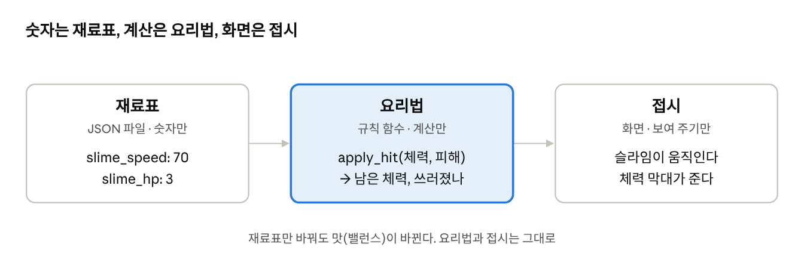
개념: 게임 만들기의 절반은 숫자 고치기
게임이 돌아가기 시작하면 숫자를 수십수백 번 바꿔요. 슬라임이 너무 빠른가? 체력 3은 너무 적은가? 이걸 밸런스 조절이라고 해요.
숫자가 코드 여기저기 흩어져 있으면 두 가지 문제가 생겨요.
- 어디를 고쳐야 할지 찾기 힘들어요.
- 같은 숫자가 두 곳에 있으면 한 곳만 고치고 잊어버려요.
그래서 숫자는 한 파일에 모아요. 읽을 때는 기본값을 꼭 같이 둬요. 파일을 잘못 고쳐도 게임이 멈추지 않게요.
말로 먼저 쓰기
- 기본값 목록을 만든다 (예: 슬라임 속도 70)
- 설정 파일이 있으면 열어서, 적힌 값만 기본값 위에 덮어쓴다
- 파일이 없거나 깨져 있으면 기본값을 그대로 쓴다
- 게임을 시작할 때 한 번만 읽는다
Python으로
rules.json 파일을 만들어요. JSON은 사람도 읽고 컴퓨터도 읽는 메모 형식이에요.
{
"slime_speed": 90,
"slime_hp": 4
}
import json
import os
DEFAULTS = {"player_speed": 200, "player_hp": 5,
"slime_speed": 70, "slime_hp": 3, "slime_sight": 220}
def load_rules(path):
rules = dict(DEFAULTS) # 기본값을 복사해 깔고
if os.path.exists(path):
try:
with open(path, encoding="utf-8") as f:
rules.update(json.load(f)) # 파일에 있는 값만 덮어쓴다
except (OSError, ValueError):
pass # 파일이 깨져도 기본값으로 계속
return rules
RULES = load_rules("rules.json") # 게임을 켤 때 한 번
# 쓸 때
step = RULES["slime_speed"] * dt
한 줄씩 보기
dict(DEFAULTS)는 기본값을 복사해요. 복사하지 않으면 원본 기본값까지 바뀌어요.rules.update(...)는 "파일에 적힌 것만 바꾸고 나머지는 그대로"예요. 위 JSON에는 플레이어 속도가 없으니 200이 그대로 남아요.try ... except는 "실패해도 게임을 멈추지 말고 아래로 가라"예요. 쉼표 하나 빠진 JSON 때문에 게임이 안 켜지면 속상하니까요.
C로
C는 JSON을 읽는 기능이 기본으로 없어요. 그래서 더 단순한 형식을 써요. rules.txt 에 한 줄에 하나씩 이름 값 을 적어요.
slime_speed 90
slime_hp 4
typedef struct { // 숫자를 모아 둘 묶음 상자
float player_speed, slime_speed;
int player_hp, slime_hp;
} Rules;
Rules rules = {200, 70, 5, 3}; // 기본값 (적힌 순서대로 들어간다)
void load_rules(const char *path) {
FILE *f = fopen(path, "r");
if (f == NULL) return; // 파일이 없으면 기본값 그대로
char name[64];
float value;
while (fscanf(f, "%63s %f", name, &value) == 2) { // 이름과 숫자를 한 쌍씩
if (strcmp(name, "slime_speed") == 0) rules.slime_speed = value;
else if (strcmp(name, "slime_hp") == 0) rules.slime_hp = (int)value;
}
fclose(f); // 열었으면 꼭 닫는다
}
한 줄씩 보기
typedef struct는 여러 변수를 한 묶음으로 만드는 방법이에요. Python의 사전({...})과 비슷한 역할이지만, 들어갈 칸을 미리 정해 둬야 해요.fscanf(f, "%63s %f", ...)는 "글자 하나, 숫자 하나"를 읽어요. 둘 다 읽으면 2를 돌려주니== 2인 동안 반복해요. 63은 글자 상자(64칸)를 넘치지 않게 하는 안전장치예요.strcmp(a, b) == 0은 "두 글자가 같다"는 뜻이에요. C에서는a == b로 글자를 비교할 수 없어요.
노크우드에서는 (Godot)
노크우드는 숫자를 assets/data/ 폴더의 JSON 파일에 둬요. 전투는 combat.json, 하루·날씨·농사는 life_rules.json, 제작법은 recipes.json 이에요. 읽는 코드는 한 곳(scripts/rules/rule_data.gd)뿐이에요.
static var _files: Dictionary = {}
static func read(path: String) -> Dictionary:
if not _files.has(path): # 처음 부르는 파일이면
var parsed = JSON.parse_string(FileAccess.get_file_as_string(path)) if FileAccess.file_exists(path) else null
_files[path] = parsed if parsed is Dictionary else {} # 읽어서 기억해 둔다
return _files[path] # 두 번째부터는 기억한 것을 바로
그리고 플레이어는 이렇게 숫자를 가져가요.
@export var move_speed: float = float(COMBAT.get("move_speed", 240.0))
한 줄씩 보기
_files는 한 번 읽은 파일을 기억하는 상자예요. 이런 걸 캐시라고 해요. 여러 곳에서 같은 파일을 부르더라도 디스크는 한 번만 읽어요.- 파일이 없거나 깨지면 빈 묶음
{}을 돌려줘요. 그러면.get("move_speed", 240.0)의 기본값 240이 쓰여요. Python 예제와 같은 생각이에요.
규칙은 한 곳에
노크우드는 "피해는 어떻게 계산하나"도 한 파일(scripts/rules/combat_rules.gd)에 모았어요. 이 파일은 화면도, 위치도 모르는 계산기예요.
static func apply_hit(health: int, dealt: int) -> Dictionary:
if health <= 0 or dealt <= 0: return {"health": health, "defeated": false}
var left := maxi(0, health - dealt)
return {"health": left, "defeated": left == 0}
체력과 피해를 받아서 "남은 체력"과 "이번에 쓰러졌나"만 돌려줘요. 플레이어든 슬라임이든 모두 이 함수를 써요. 화면이 필요 없으니 게임을 켜지 않고도 자동으로 검사할 수 있어요(15장).
하나 더 볼게요. 음식을 먹으면 공격력이 1.5배가 되는 규칙이 있어요. 그런데 피해 1의 1.5배는 1.5이고, 체력은 정수예요. 0.5를 버리면 버프가 아무 효과가 없어요.
static func scaled_damage(amount: int, factor: float, carry: float) -> Array:
var total := amount * factor + carry # 이번 피해 + 지난번에 남은 조각
var dealt := floori(total + 0.000001) # 정수 부분만 실제 피해로
return [dealt, maxf(0.0, total - dealt)] # 남은 조각은 다음을 위해 보관
첫 타격: 1.5 → 피해 1, 조각 0.5 보관. 두 번째 타격: 1.5 + 0.5 = 2.0 → 피해 2. 두 번 합치면 3, 평균 1.5가 돼요. + 0.000001 은 컴퓨터가 2.0을 1.9999999로 계산하는 일을 막는 작은 안전장치예요.
!흔한 실수
- 같은 숫자를 두 곳에 적기. 한쪽만 고치면 "왜 안 바뀌지?"로 한 시간을 써요.
- 파일을 매 프레임 읽기. 게임이 끊겨요. 한 번 읽고 기억하세요.
- 기본값 없이 읽기. 오타 하나에 게임이 안 켜져요.
- 확정 안 된 숫자를 표시하지 않기. 노크우드는
[임시값]이라고 적어 둬요. 나중에 무엇을 다듬어야 하는지 바로 보여요.
✓직접 해보기
- 코드는 건드리지 말고
rules.json의slime_speed만 2배로 해 보세요. rules.json에서 쉼표를 하나 지워 일부러 깨뜨려 보세요. 게임이 기본값으로 켜지나요?- 피해 계산을
deal_damage(hp, amount)함수 하나로 모아 보세요. 플레이어와 슬라임이 둘 다 이 함수를 쓰게요.
7장 정리
- 밸런스용 숫자는 한 파일에 모으고, 읽을 때는 기본값을 함께 둔다.
- 파일은 시작할 때 한 번만 읽고 기억해 둔다(캐시).
- 피해 계산 같은 규칙은 화면과 떨어진 한 곳의 함수에 모은다.
| 밸런스 조절 | 게임이 알맞게 어렵고 재밌도록 숫자를 다듬는 일 |
|---|---|
| JSON | 사람과 컴퓨터가 모두 읽는 데이터 형식 |
| 기본값 | 설정이 없거나 깨졌을 때 쓰는 값 |
| 캐시 | 한 번 읽은 결과를 기억해 다시 쓰는 것 |
확인 문제
rules.json에 slime_speed만 적혀 있을 때 player_speed는 어떤 값이 될까요?
공격력 1.5배 버프로 피해 1을 두 번 주면 이 책의 방식(carry)으로 실제 피해는 각각 얼마일까요?
- A. 1, 1
- B. 2, 2
- C. 1, 2
- D. 1.5, 1.5
규칙 함수를 화면과 떼어 두면 좋은 점은?
정답과 해설은 부록 A에 있어요.
적 만들기: 감지·추적·귀환
개념: 적은 상태를 오간다
게임 속 적이 똑똑해 보여도, 대부분은 아주 단순한 규칙이에요. "지금 무엇을 하는 중인가(상태)"와 "언제 다른 일로 넘어가는가(조건)"만 정하면 돼요.
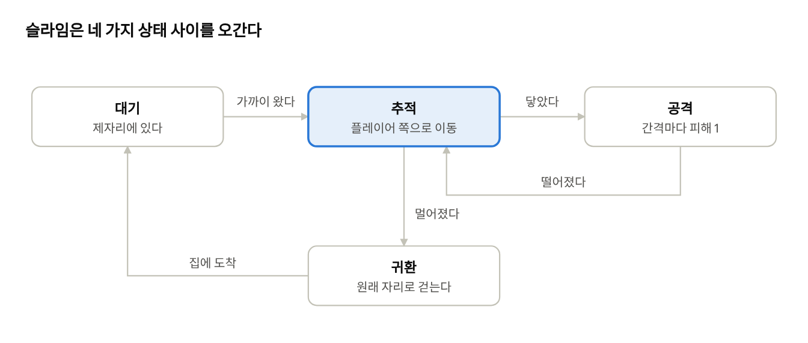
슬라임은 가만히 있다가 플레이어가 가까이 오면 쫓아가고, 닿으면 때리고, 플레이어가 멀어지면 원래 자리로 돌아가요. 이런 그림을 상태 기계라고 해요. 적을 만들기 전에 이 그림부터 그려 보면 코드가 절반은 끝난 거예요.
왜 귀환이 필요할까요? 귀환이 없으면 적들이 플레이어를 쫓아다니다 한곳에 뭉쳐요. 맵의 배치가 깨져서 다음에 왔을 때 빈 곳과 적이 많은 곳이 생겨요.
말로 먼저 쓰기
- 플레이어까지 거리를 잰다
- 거리가 시야(220픽셀)보다 가까우면
- 닿을 만큼(20픽셀)보다 멀면 → 플레이어 쪽으로 움직인다(추적)
- 닿았고 공격 대기 시간이 끝났으면 → 피해를 주고 대기 시간을 다시 채운다(공격)
- 시야보다 멀면
- 집에서 멀면 → 집 쪽으로 움직인다(귀환)
- 집에 있으면 → 가만히 있는다(대기)
Python으로
def make_slime(x, y):
return {"x": x, "y": y, "home_x": x, "home_y": y, # 태어난 자리 = 집
"hp": 3, "hit_wait": 0.0}
def update_slime(s, player, dt):
s["hit_wait"] = max(0.0, s["hit_wait"] - dt)
dx, dy = player["x"] - s["x"], player["y"] - s["y"]
dist = math.hypot(dx, dy)
if dist < 220 and player["hp"] > 0: # 보이는 거리 안
if dist > 20: # 추적
step = 70 * dt
s["x"], s["y"] = move_with_walls(s["x"], s["y"], dx / dist * step, dy / dist * step, 20)
elif s["hit_wait"] == 0.0: # 공격
hurt_player(player, 1)
s["hit_wait"] = 1.0
else: # 귀환 또는 대기
hx, hy = s["home_x"] - s["x"], s["home_y"] - s["y"]
home = math.hypot(hx, hy)
if home > 4:
step = 70 * dt
s["x"], s["y"] = move_with_walls(s["x"], s["y"], hx / home * step, hy / home * step, 20)
한 줄씩 보기
- 슬라임도 플레이어처럼 상태(위치, 체력, 공격 대기 시간)를 담은 사전이에요. 슬라임을 여러 마리 만들고 싶으면
make_slime을 여러 번 부르면 돼요. dx / dist는 "플레이어 쪽 방향을 길이 1로" 만드는 정규화예요(5장). 여기에 한 프레임에 갈 거리(step)를 곱해요.- 슬라임도
move_with_walls를 써요. 플레이어와 같은 벽 규칙을 쓰니 벽을 뚫지 않아요. 한 번 만든 부품을 다시 쓰는 게 이렇게 편해요. hit_wait가 없으면 닿아 있는 동안 매 프레임(1초에 60번) 때려요. 4장의 "남은 시간" 패턴이 여기서도 쓰여요.home > 4처럼 작은 여유를 둬요. 정확히 0을 기다리면 집 주변에서 계속 덜덜 떨어요.
C로
typedef struct {
float x, y, home_x, home_y, hit_wait;
int hp, alive;
} Slime;
void update_slime(Slime *s, Player *p, float dt) {
s->hit_wait = fmaxf(0, s->hit_wait - dt);
float dx = p->x - s->x, dy = p->y - s->y;
float dist = sqrtf(dx * dx + dy * dy);
if (dist < 220 && p->hp > 0) {
if (dist > 20) {
float step = 70 * dt;
move_with_walls(&s->x, &s->y, dx / dist * step, dy / dist * step, 20);
} else if (s->hit_wait == 0) {
hurt_player(p, 1);
s->hit_wait = 1.0f;
}
} else {
float hx = s->home_x - s->x, hy = s->home_y - s->y;
float home = sqrtf(hx * hx + hy * hy);
if (home > 4) {
float step = 70 * dt;
move_with_walls(&s->x, &s->y, hx / home * step, hy / home * step, 20);
}
}
}
한 줄씩 보기
s->x는 "포인터 s가 가리키는 슬라임의 x"예요. 슬라임 자체를 바꾸려면 복사본이 아니라 주소를 받아야 하니까요(6장).- 구조가 Python과 줄 단위로 똑같아요. 상태 기계 그림을 먼저 그렸다면 어느 언어로든 옮기기만 하면 돼요.
- 죽은 슬라임은 목록에서 지우는 대신
alive = 0으로 표시해요. C의 배열은 크기가 고정이라 중간을 빼기 번거로우니까요.
노크우드에서는 (Godot)
노크우드의 슬라임(scripts/enemy.gd)도 뼈대는 같아요(줄임).
func _physics_process(delta: float) -> void:
if health <= 0 or dormant: # 쓰러졌거나 '잠든' 슬라임은 아무것도 안 함
return
if returning: # 귀환 중이면 귀환만
_return_home(delta)
return
var target: Node2D = null
var nearest := detection_range # 시야 260픽셀
for candidate in get_tree().get_nodes_in_group("players"):
var distance := global_position.distance_to(candidate.global_position)
if distance < nearest: # 가장 가까운 플레이어를 고른다
nearest = distance
target = candidate
velocity = Vector2.ZERO
if target != null:
var ray := PhysicsRayQueryParameters2D.create(global_position, target.global_position, 1)
if get_world_2d().direct_space_state.intersect_ray(ray).is_empty(): # 벽 너머는 못 본다
if nearest > ATTACK_REACH:
velocity = global_position.direction_to(target.global_position) * move_speed # 추적
else:
target.take_damage(DAMAGE) # 공격
if velocity != Vector2.ZERO: move_and_slide()
한 줄씩 보기
- 협동 게임이라 플레이어가 여럿이에요. 그래서 모든 플레이어 중 가장 가까운 사람을 골라요. "가장 가까운 것 찾기"는 게임에서 정말 자주 쓰는 모양이에요.
- 6장의 레이캐스트를 여기서도 써요. 벽 너머 플레이어는 "못 본" 걸로 쳐요.
- 마지막 줄이 성능 비결이에요. 대부분의 슬라임은 플레이어가 멀어서 멈춰 있어요. 멈춘 슬라임은 충돌 계산을 건너뛰어요.
dormant(잠듦)는 큰 맵에서 쓰는 상태예요. 플레이어가 없는 먼 구역의 슬라임은 통째로 멈춰 둬요(12장).
노크우드의 귀환에는 하나가 더 있어요. 시간 제한(RETURN_TIMEOUT := 6.0)이에요. 집으로 가는 길이 벽에 막히면 슬라임이 영원히 벽에 붙어 있을 수 있거든요. 6초가 지나면 포기하고 그 자리에서 다시 평소대로 돌아가요. 이런 탈출구를 만들어 두는 것이 적 AI에서 중요해요.
!흔한 실수
- 적이 벽에 붙어서 못 빠져나와요. 이 슬라임은 벽을 돌아가는 길찾기를 하지 않아요. 노크우드도 일부러 안 했어요("경로 탐색은 하지 않는다"). 대신 벽 너머는 못 보게 하고, 귀환에 시간 제한을 둬서 어색함을 줄였어요.
- 닿자마자 체력이 다 달아요. 공격 간격(
hit_wait)이나 플레이어의 무적 시간이 없어서예요. - 0으로 나눠요. 슬라임이 플레이어와 정확히 같은 자리에 있으면
dist가 0이에요. 위 코드는dist > 20일 때만 나눠서 안전해요.
✓직접 해보기
- 시야를 220에서 400으로 늘려 보세요. 게임이 얼마나 어려워지나요?
- 슬라임이 체력이 1 남으면 도망가는 상태를 추가해 보세요. 상태 기계 그림에 상자를 하나 그리고, 플레이어 반대 방향(
-dx, -dy)으로 움직이면 돼요. - 슬라임을 5마리로 늘려 보세요. 코드는 몇 줄 바뀌나요?
8장 정리
- 적의 생각은 몇 개의 상태와 상태를 바꾸는 조건(상태 기계)이다.
- 슬라임은 대기 → 추적 → 공격 → 귀환을 오간다.
- 길이 막혀도 영원히 갇히지 않도록 시간 제한 같은 탈출구를 둔다.
| 상태 기계 | 상태와 상태를 바꾸는 조건을 그림처럼 정리한 구조 |
|---|---|
| 감지 범위(시야) | 적이 플레이어를 알아채는 거리 |
| 귀환 | 적이 원래 자리로 돌아가는 상태 |
| dormant(잠듦) | 먼 구역의 적을 멈춰 계산을 아끼는 상태 |
확인 문제
귀환 상태가 없으면 생기는 문제는?
슬라임이 닿아 있는 동안 1초에 60번 때리는 문제를 막는 변수는?
- A. home_x
- B. hit_wait
- C. dist
- D. speed
노크우드 슬라임이 귀환에 6초 시간 제한을 둔 이유는?
정답과 해설은 부록 A에 있어요.
손맛: 피해 숫자·깜빡임·소리
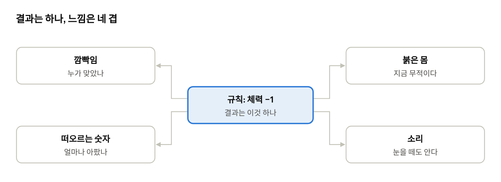
개념: 규칙은 그대로, 느낌만 더한다
슬라임을 때렸는데 아무 반응이 없으면 맞았는지 알 수 없어요. 그래서 게임은 작은 신호를 여러 개 겹쳐요. 이걸 흔히 손맛(게임 필, 주스)이라고 해요.
| 신호 | 무엇을 알려주나 | 슬라임 잡기에서는 |
|---|---|---|
| 깜빡임 | 누가 맞았나 | 맞은 슬라임이 0.15초 하얗게 |
| 떠오르는 숫자 | 얼마나 아팠나 | "-1"이 위로 떠올랐다 사라짐 |
| 색 | 지금 위험한가 | 무적 시간 동안 플레이어가 붉게 |
| 소리 | 눈을 떼고 있어도 알게 | 맞는 소리, 주울 때 소리 |
중요한 원칙이 하나 있어요. 손맛은 규칙을 바꾸지 않아요. 숫자가 떠오르든 말든 체력은 똑같이 줄어요. 그래서 손맛 코드는 따로 두는 게 좋아요. 나중에 설정에서 끄거나 바꿔도 게임이 깨지지 않게요.
말로 먼저 쓰기
- 피해가 생기면, "떠오르는 숫자" 하나를 목록에 추가한다 (위치, 글자, 남은 시간 0.6초)
- 매 프레임
- 각 숫자의 남은 시간을 dt만큼 줄이고, 조금 위로 옮긴다
- 남은 시간이 0이 된 숫자는 목록에서 지운다
- 그릴 때
- 깜빡임 시간이 남은 슬라임은 하얀색으로 그린다
- 목록의 숫자를 모두 그린다
Python으로
popups = [] # 떠오르는 숫자 목록
def hurt_player(player, amount):
if player["invincible"] > 0: # 무적 시간이면 무시
return
player["hp"] = max(0, player["hp"] - amount)
player["invincible"] = 0.8 # 맞은 뒤 0.8초 무적
popups.append({"x": player["x"], "y": player["y"] - 20, "text": f"-{amount}", "life": 0.6})
# 매 프레임 (규칙 단계)
for p in popups:
p["life"] -= dt
p["y"] -= 30 * dt # 1초에 30픽셀씩 위로
popups[:] = [p for p in popups if p["life"] > 0] # 다 된 것은 버린다
# 그리기 단계
body = (255, 120, 120) if player["invincible"] > 0 else (240, 220, 160)
pygame.draw.rect(screen, body, (player["x"] - 12, player["y"] - 12, 24, 24))
for p in popups:
screen.blit(font.render(p["text"], True, (255, 230, 200)), (p["x"], p["y"]))
한 줄씩 보기
- 무적 시간은 손맛이기도 하고 규칙이기도 해요. 없으면 슬라임 세 마리에 둘러싸이자마자 죽어요. 붉은 색은 "지금 무적이야"를 알려 주는 신호예요.
f"-{amount}"는 글자 안에 변수를 끼워 넣는 방법이에요. amount가 1이면 "-1"이 돼요.popups[:] = [...]는 "조건에 맞는 것만 남긴 새 목록으로 교체"예요. 반복하는 도중에 목록에서 하나씩 지우면 헷갈리기 쉬워서 이렇게 해요.- 숫자가 생기고 → 움직이고 → 사라지는 흐름은 불꽃, 먼지, 자국 같은 모든 효과에 그대로 쓸 수 있어요.
C로
typedef struct { float x, y, life; int amount; } Popup;
Popup popups[32]; // 최대 32개까지 동시에
void add_popup(float x, float y, int amount) {
for (int i = 0; i < 32; i++) {
if (popups[i].life <= 0) { // 비어 있는 칸을 찾아서
popups[i] = (Popup){x, y - 20, 0.6f, amount};
return;
}
} // 다 차 있으면 그냥 넘어간다
}
// 매 프레임
for (int i = 0; i < 32; i++) {
if (popups[i].life > 0) {
popups[i].life -= dt;
popups[i].y -= 30 * dt;
}
}
// 그리기
for (int i = 0; i < 32; i++)
if (popups[i].life > 0)
DrawText(TextFormat("-%d", popups[i].amount), (int)popups[i].x, (int)popups[i].y, 20, WHITE);
한 줄씩 보기
- C에는 Python처럼 마음대로 늘어나는 목록이 없어요. 그래서 최대 개수를 정해 두고,
life가 0 이하인 칸을 "빈 칸"으로 재사용해요. 이걸 오브젝트 풀이라고 해요. - 칸이 다 차면 새 숫자를 포기해요. 손맛은 하나 빠져도 괜찮지만, 게임이 멈추면 안 되니까요.
TextFormat("-%d", 3)은 "-3"을 만들어요.%d자리에 정수가 들어가요.
노크우드에서는 (Godot)
노크우드는 "피해 숫자"를 별도의 작은 부품(scripts/damage_feedback.gd)으로 만들었어요. 첫 줄 설명이 원칙을 그대로 말해 줘요.
## 확정된 체력 감소만 시각화한다. 전투 판정/네트워크 이벤트를 만들지 않는다.
var last_health := -1
const DURATION := 0.55
func _process(delta: float) -> void:
var current := int(actor.health)
if last_health >= 0 and current < last_health: # 지난 프레임보다 체력이 줄었으면
amount = last_health - current # 줄어든 만큼을 숫자로
remaining = DURATION # 0.55초 동안 보여 준다
hit_audio.play() # 맞는 소리
last_health = current
한 줄씩 보기
- 이 부품은 공격 코드를 전혀 몰라요. 매 프레임 체력이 줄었는지만 지켜봐요. 칼에 맞든, 돌에 맞든, 배고파서 줄든 똑같이 숫자가 떠요.
- 그래서 멀티플레이에서도 그대로 돼요. 친구 화면에서는 서버가 보낸 체력만 바뀌는데, 그것만 보고 숫자를 띄우니까요.
- 숫자는 머리 위 표시용 층(
z_index = 30)에 그려서 앞 나무에 가려지지 않아요.
소리도 재밌는 방법으로 만들었어요. 성공·실패 알림음(scripts/action_feedback.gd)은 소리 파일이 아니라 코드로 파동을 직접 만들어요.
var frequency := (523.25 if t < 0.12 else 659.25) if success else (293.66 if t < 0.12 else 220.0)
523.25는 도(C5), 659.25는 미(E5)의 주파수예요. 성공하면 "도→미"로 올라가고, 실패하면 "레→라"로 내려가요. 올라가는 소리는 긍정, 내려가는 소리는 부정으로 들리는 건 거의 모든 게임이 쓰는 규칙이에요. 진짜 효과음을 구하기 전까지 임시로 쓰기 좋아요.
!흔한 실수
- 손맛 코드에서 체력을 깎기. 효과를 끄면 피해도 사라져요. 규칙은 규칙 코드에서만.
- 효과를 만들기만 하고 지우지 않기. 목록이 계속 길어져 몇 분 뒤 게임이 느려져요.
- 색만으로 알리기. 색을 구분하기 어려운 사람도 있어요. 노크우드의 날씨 시계는 그림과 함께 "낮 · 맑음" 같은 글자도 같이 보여 줘요.
✓직접 해보기
- 슬라임을 때리면 뒤로 10픽셀 밀려나게 해 보세요(넉백). 방향은 "플레이어 → 슬라임"이에요.
- 맞을 때 화면 전체를 0.1초 동안 살짝 흔들어 보세요. 그릴 때만 모든 것을 몇 픽셀 옮겨 그리면 돼요.
- 손맛을 모두 끈 버전과 켠 버전을 친구에게 해 보게 하고, 어느 쪽이 더 재밌는지 물어 보세요.
9장 정리
- 손맛은 결과를 바꾸지 않고 '맞았다'는 느낌만 더한다.
- 깜빡임, 떠오르는 숫자, 색, 소리를 겹쳐 쓴다.
- 효과는 생기고 → 움직이고 → 사라지게 만들고, 다 쓴 것은 지운다.
| 손맛(게임 필) | 조작에 대한 기분 좋은 반응 |
|---|---|
| 무적 시간 | 맞은 직후 잠깐 다시 맞지 않는 시간 |
| 오브젝트 풀 | 정해진 개수의 칸을 재사용하는 방식 |
확인 문제
손맛 코드에서 체력을 직접 깎으면 안 되는 이유는?
노크우드의 피해 숫자 부품이 멀티플레이에서도 그대로 동작하는 이유는?
- A. 공격 코드를 직접 호출해서
- B. 체력이 줄었는지만 지켜보기 때문에
- C. 서버에서만 실행돼서
- D. 숫자를 미리 그려 둬서
성공 알림음이 '도→미'로 올라가는 이유는?
정답과 해설은 부록 A에 있어요.
인벤토리와 아이템
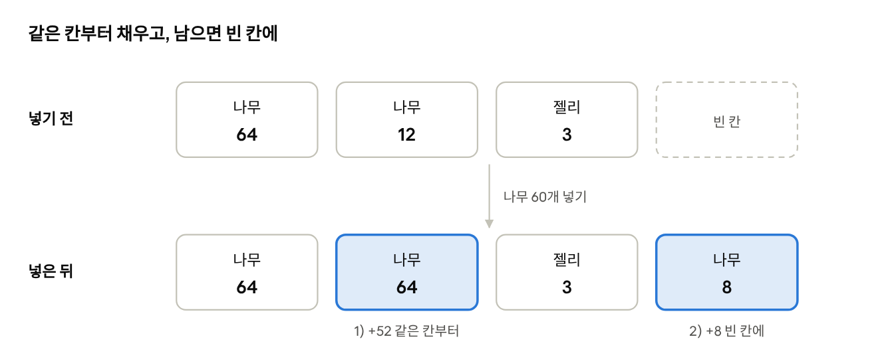
개념: 가방은 칸이 나뉜 서랍
가방을 칸이 20개인 서랍이라고 생각해 보세요. 각 칸에는 한 종류의 물건만, 정해진 개수(예: 64개)까지 들어가요.
위 그림처럼 나무 60개를 넣으면, 나무 12개가 든 칸에 52개를 넣어 가득 채우고, 남은 8개는 빈 칸에 넣어요. 이 순서가 거의 모든 게임의 규칙이에요.
말로 먼저 쓰기
- 같은 아이템이 들어 있고 아직 가득 차지 않은 칸을 앞에서부터 찾아 채운다
- 그래도 남으면, 빈 칸을 앞에서부터 찾아 채운다
- 그래도 남으면, 남은 개수를 돌려준다 (부른 쪽이 바닥에 떨어뜨리든 알림을 띄우든 결정)
Python으로
STACK_LIMIT = 64
bag = [None] * 20 # 칸 20개, 처음엔 모두 비어 있음(None)
def add_item(bag, item, count):
for slot in bag: # 1) 같은 아이템 칸부터
if slot and slot["item"] == item and slot["count"] < STACK_LIMIT:
put = min(STACK_LIMIT - slot["count"], count) # 들어갈 수 있는 만큼만
slot["count"] += put
count -= put
if count == 0:
return 0
for i, slot in enumerate(bag): # 2) 빈 칸에
if slot is None:
put = min(STACK_LIMIT, count)
bag[i] = {"item": item, "count": put}
count -= put
if count == 0:
return 0
return count # 3) 못 넣은 개수
# 슬라임을 잡으면
left = add_item(bag, "slime_jelly", 1)
if left > 0:
print("가방이 가득 찼어요!")
한 줄씩 보기
- 빈 칸은
None(없음), 찬 칸은{"item": "이름", "count": 개수}사전이에요. if slot and ...의slot은 "칸이 비어 있지 않으면"이라는 뜻이에요. Python은None을 거짓으로 쳐요.min(...)으로 들어갈 수 있는 만큼만 넣어요. 이걸 빼먹으면 한 칸에 100개가 들어가는 버그가 생겨요.enumerate(bag)는 칸과 함께 칸 번호(i)도 줘요. 빈 칸에 새 사전을 넣으려면 번호가 필요하거든요.- 함수가 "못 넣은 개수"를 돌려주는 게 핵심이에요. 아이템이 날아가는 일이 없어요.
C로
#define BAG_SIZE 20
#define STACK_LIMIT 64
typedef struct { char item[32]; int count; } Slot; // count가 0이면 빈 칸
Slot bag[BAG_SIZE];
int add_item(const char *item, int count) {
for (int i = 0; i < BAG_SIZE && count > 0; i++) { // 1) 같은 아이템 칸
if (bag[i].count > 0 && strcmp(bag[i].item, item) == 0) {
int put = STACK_LIMIT - bag[i].count;
if (put > count) put = count;
bag[i].count += put;
count -= put;
}
}
for (int i = 0; i < BAG_SIZE && count > 0; i++) { // 2) 빈 칸
if (bag[i].count == 0) {
int put = count < STACK_LIMIT ? count : STACK_LIMIT;
strncpy(bag[i].item, item, sizeof(bag[i].item) - 1); // 이름 복사(칸 크기를 넘지 않게)
bag[i].item[sizeof(bag[i].item) - 1] = '\0';
bag[i].count = put;
count -= put;
}
}
return count; // 3) 못 넣은 개수
}
한 줄씩 보기
- C는 "빈 칸"을 나타낼
None같은 게 없어서count == 0을 빈 칸으로 약속했어요. - 글자는
char item[32], 즉 글자 32칸짜리 상자예요. 이름을 넣을 때는strncpy로 상자 크기를 넘지 않게 복사해요. 넘치면 옆 칸의 값을 덮어써서 이상한 버그가 생겨요. C에서 가장 조심해야 하는 부분이에요. '\0'은 "글자는 여기서 끝"이라는 표시예요. C의 글자는 끝에 이 표시가 꼭 있어야 해요.count < STACK_LIMIT ? count : STACK_LIMIT는 "count가 작으면 count, 아니면 STACK_LIMIT", 즉 둘 중 작은 값이에요.
노크우드에서는 (Godot)
노크우드의 가방(scripts/items/inventory.gd)도 같은 순서예요. 다른 점은 두 가지예요.
## 퀵슬롯 10칸은 아래 20칸 중 일부이며 추가 보관 공간이 아니다.
const CAPACITY := 20
static var ACQUISITION_ORDER: Array = _acquisition_order() # 퀵슬롯(10~19번)을 먼저 채우는 순서
func add(item: String, grade: String, quantity: int) -> int:
var remaining := quantity
for index in ACQUISITION_ORDER:
var slot: Dictionary = slots[index]
if slot.get("item") == item and slot.get("grade") == grade: # 이름도 품질도 같아야 쌓인다
var accepted := mini(STACK_LIMIT - int(slot.count), remaining)
slot.count += accepted
remaining -= accepted
if remaining == 0: return quantity
# ... 빈 칸 채우기는 Python과 같음 ...
return quantity - remaining # '넣은 개수'를 돌려준다
한 줄씩 보기
- 품질(grade)이 있어요. 같은 고기라도 "고품질"과 "평범"은 다른 칸에 들어가요. 노크우드에서는 사냥감을 적게 때려서 잡을수록 고기 품질이 좋아져요(
hunt_rules.gd: 1~2번 고품질, 3~4번 평범, 5번 이상 저품질). - 퀵슬롯을 먼저 채워요. 화면 아래 바로 쓸 수 있는 칸에 먼저 들어가야 편하니까요. 퀵슬롯은 따로 있는 가방이 아니라 같은 20칸 중 일부예요.
- Python 예제는 "못 넣은 개수", 노크우드는 "넣은 개수"를 돌려줘요. 어느 쪽이든 좋지만 한 게임 안에서는 하나로 통일해야 헷갈리지 않아요.
가방을 저장 파일에서 불러올 때의 코드도 볼 만해요.
func restore(value: Variant) -> bool:
# 전체 검증이 끝난 뒤에만 교체한다. 잘못된 저장이 현재 가방을 비우지 않는다.
if not value is Array or value.size() != CAPACITY: return false
# ... 칸마다 이름·품질·개수(1~64)가 올바른지 확인 ...
slots = restored
return true
저장 파일이 깨져 있어도 지금 가방을 날리지 않아요. 먼저 전부 확인하고, 다 괜찮을 때만 바꿔요. 13장에서 다시 나오는 생각이에요.
!흔한 실수
- 가방이 가득 찼는데 아이템이 사라져요. 못 넣은 개수를 무시했어요. 바닥에 떨어뜨리거나 줍지 못하게 하세요.
- 한 칸에 한도보다 많이 들어가요.
min으로 자르지 않았어요. - 아이템 이름을 화면에 보이는 글자로 저장해요. "젤리"를 "슬라임 젤리"로 바꾸면 예전 저장이 깨져요. 노크우드처럼
wood같은 안 바뀌는 ID로 저장하고, 화면에 보일 이름은 따로 표(items.json)에서 찾아요.
✓직접 해보기
- 칸이 3개뿐인 가방에 젤리 150개를 넣어 보세요. 몇 개가 남아야 할까요? (64 + 64 + 22 = 150, 남는 것 0개)
- 화면 오른쪽 위에 가방의 젤리 개수를 표시해 보세요.
- "젤리 3개 → 물약 1개" 제작을 만들어 보세요. 재료가 충분한지 먼저 확인한 뒤에 빼야 해요.
10장 정리
- 가방은 칸 목록이다.
- 같은 아이템 칸부터 채우고, 남으면 빈 칸에, 그래도 남으면 못 넣은 개수를 돌려준다.
- 아이템은 화면 이름이 아니라 바뀌지 않는 ID로 저장한다.
| 인벤토리 | 아이템을 담는 칸 목록 |
|---|---|
| 스택 | 한 칸에 쌓이는 같은 아이템 묶음 |
| 아이템 ID | 저장에 쓰는 바뀌지 않는 이름(예: wood) |
확인 문제
칸 3개짜리 빈 가방(한 칸 최대 64)에 젤리 150개를 넣으면 남는 개수는?
min()으로 넣을 양을 자르지 않으면 생기는 버그는?
- A. 아이템이 사라진다
- B. 한 칸에 한도보다 많이 들어간다
- C. 가방이 비워진다
- D. 저장이 안 된다
노크우드에서 같은 고기라도 다른 칸에 들어가는 경우는?
정답과 해설은 부록 A에 있어요.
시간이 흐르는 세계: 낮·밤·날씨
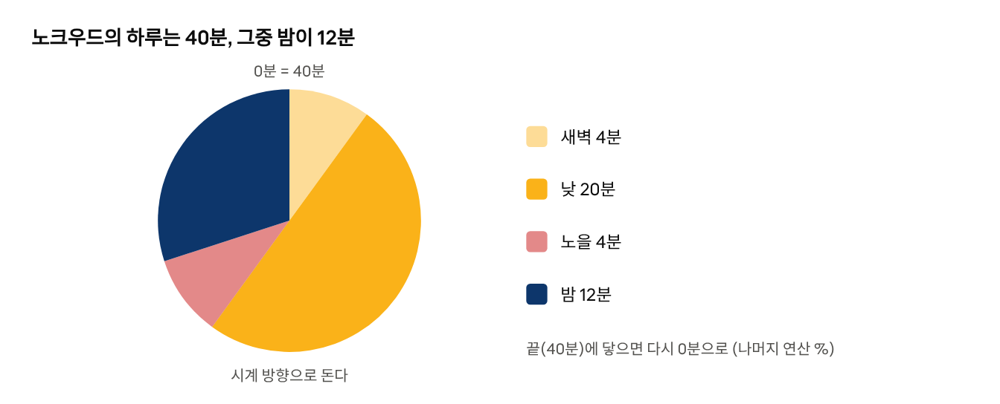
개념: 하루는 돌아오는 숫자
게임 속 하루를 120초로 정했다고 해 볼게요. time_of_day 라는 변수가 0에서 120까지 올라가다가, 120이 되면 다시 0으로 돌아가요.
이렇게 "끝에 닿으면 처음으로"는 나머지 연산(%)으로 한 줄로 돼요. (118 + 5) % 120 = 3 이에요.
그다음에는 시간에 따라 화면을 어둡게 해요. 정오에는 밝기 1(그대로), 한밤중에는 0.3(30%) 정도로요. 색에 밝기를 곱하면 돼요.
말로 먼저 쓰기
- 매 프레임 시간 = (시간 + dt) 를 하루 길이로 나눈 나머지
- 밝기 = 시간이 하루의 한가운데에 가까울수록 1, 끝에 가까울수록 0.3
- 모든 색에 밝기를 곱해서 그린다
Python으로
DAY_LENGTH = 120.0 # 하루 = 120초
time_of_day = 30.0 # 아침 무렵에서 시작
def daylight(t):
# 하루 진행(0~1)을 코사인 물결로 바꿔 0.3~1.0 사이 밝기를 만든다
p = t / DAY_LENGTH
return 0.65 + 0.35 * math.cos((p - 0.5) * 2 * math.pi)
# 매 프레임
time_of_day = (time_of_day + dt) % DAY_LENGTH
# 그릴 때
light = daylight(time_of_day)
grass = (80, 140, 80)
shaded = tuple(int(v * light) for v in grass) # 빨강·초록·파랑에 각각 밝기를 곱한다
한 줄씩 보기
math.cos는 부드럽게 오르내리는 물결이에요. 수학을 몰라도 괜찮아요. "부드럽게 밝아졌다 어두워지는 숫자를 만든다"만 기억하세요. 결과는 하루 중간(60초)에 1.0, 처음과 끝에 0.3이에요.% DAY_LENGTH덕분에time_of_day는 영원히 0~120 사이에 머물러요.- 색에 0.3을 곱하면 (24, 42, 24), 거의 검은 초록이 돼요. 진짜 게임은 밤에 파란 빛을 조금 섞어서 더 밤처럼 보이게 해요.
C로
#define DAY_LENGTH 120.0f
float daylight(float t) {
float p = t / DAY_LENGTH;
return 0.65f + 0.35f * cosf((p - 0.5f) * 2 * PI);
}
// 매 프레임
time_of_day = fmodf(time_of_day + dt, DAY_LENGTH); // 소수의 나머지는 fmodf
// 그릴 때
float light = daylight(time_of_day);
Color c = {80, 140, 80, 255};
c.r = (unsigned char)(c.r * light);
c.g = (unsigned char)(c.g * light);
c.b = (unsigned char)(c.b * light);
한 줄씩 보기
- C의
%는 정수에만 쓸 수 있어요. 소수는fmodf를 써요. (unsigned char)는 "0~255 상자에 맞게 바꿔라"는 뜻이에요. raylib의 색은 이 크기의 상자 네 개예요.
노크우드에서는 (Godot)
노크우드는 하루를 새벽 · 낮 · 노을 · 밤 네 구간으로 나눠요. 하루는 40분(새벽 4분, 낮 20분, 노을 4분, 밤 12분)이에요. 구간별 길이와 색은 life_rules.json 에 있고, 계산은 scripts/rules/day_rules.gd 에 있어요.
## 시간대 이름과 그 안에서의 진행(0~1).
static func phase(time: float) -> Array:
var t := fposmod(time, length()) # 하루 길이로 나눈 나머지
for row in DAY.get("phases", []): # ["dawn", 240], ["day", 1200], ... (초)
if t < float(row[1]): return [str(row[0]), t / maxf(1.0, float(row[1]))]
t -= float(row[1]) # 이 구간을 지났으면 빼고 다음 구간으로
return ["day", 0.0]
한 줄씩 보기
- 구간을 차례로 빼 나가며 "지금 어느 구간인가"를 찾아요. 택배 상자를 하나씩 내려놓으며 몇 번째 상자인지 세는 것과 비슷해요.
fposmod는 Python의%와 같아요. 음수가 들어와도 항상 0 이상을 돌려줘요.
밝기는 구간이 바뀔 때 확 바뀌지 않게 해요.
var blend := clampf((float(p[1]) - 0.7) / 0.3, 0.0, 1.0) # 구간의 마지막 30%에서만 0→1
var color := here.lerp(next, smoothstep(0.0, 1.0, blend)) # 지금 색에서 다음 색으로 섞는다
lerp 는 "두 값 사이를 몇 퍼센트만큼 섞기"예요. smoothstep 은 섞는 속도를 처음과 끝에서 느리게 해서 더 자연스럽게 만들어요. 게임에서 정말 자주 쓰는 두 함수이니 이름만이라도 기억해 두세요.
날씨는 주사위로 정해요. 날씨마다 확률을 정해 두고(노크우드: 맑음 55%, 흐림 20%, 비 15%, 안개 10%), 날씨가 끝날 때마다 0~1 사이 무작위 수를 뽑아요.
static func pick_weather(roll: float) -> String:
var acc := 0.0
for key in chances: # 확률을 차례로 더해 가다가
acc += float(chances[key])
if roll < acc: return str(key) # 뽑은 수보다 커지는 순간의 날씨
return "clear"
막대 길이가 확률인 막대를 이어 붙이고, 그 위에 다트를 던지는 것과 같아요. 아이템 드롭, 뽑기, 물고기 종류 같은 모든 확률 뽑기에 쓸 수 있는 모양이에요.
시간이 멈춘 동안에는?
노크우드의 농사는 게임을 꺼 둔 동안에도 작물이 자라요(farm_rules.gd). 매 프레임 자라게 하는 대신, 밭마다 마지막으로 확인한 현실 시각(updated)을 저장해 둬요. 다시 켜면 "지금 시각 − 저장한 시각"만큼 한 번에 자라게 해요. 반대로 낮과 밤은 월드가 열려 있을 때만 흘러요. 무엇이 현실 시간을 따르고 무엇이 게임 시간을 따를지 정하는 것도 기획의 일부예요.
!흔한 실수
- 밤을 너무 어둡게. 아무것도 안 보여서 답답해요. 밤에도 플레이어 주변과 길은 보여야 해요.
- 밝기를 확 바꾸기. 구간이 바뀔 때 화면이 확 어두워지면 어색해요. lerp로 섞으세요.
- 날씨가 너무 자주 바뀌기. 노크우드는 한 번 정한 날씨를 최소 300초에서 최대 900초 동안 유지해요.
✓직접 해보기
- 하루 길이를 20초로 줄여서 낮·밤이 바뀌는 걸 빨리 확인해 보세요.
- 밤에는 슬라임의 시야가 1.5배가 되게 해 보세요. 밝기가 0.5 아래면 밤으로 쳐요.
- 화면 구석에 "낮", "밤" 글자를 띄워 보세요.
11장 정리
- 게임 속 시간은 하루 길이에서 다시 0으로 돌아가는 숫자 하나다(나머지 연산).
- 색에 밝기를 곱하고, 구간 사이는 lerp로 부드럽게 섞는다.
- 날씨 같은 무작위 선택은 확률 막대 위에 다트를 던지는 방식으로 고른다.
| 나머지 연산(%) | 나눈 나머지. 끝에 닿으면 처음으로 돌아가게 할 때 쓴다 |
|---|---|
| lerp | 두 값 사이를 비율만큼 섞는 계산 |
| smoothstep | 섞는 속도를 처음과 끝에서 느리게 만드는 함수 |
확인 문제
하루가 120초일 때 (118 + 5) % 120의 값은?
날씨 확률이 맑음 0.55, 흐림 0.2, 비 0.15, 안개 0.1이다. 뽑은 수가 0.8이면?
- A. 맑음
- B. 흐림
- C. 비
- D. 안개
노크우드에서 게임을 꺼 둔 동안에도 흐르는 것과 멈추는 것은?
정답과 해설은 부록 A에 있어요.
넓은 세계 만들기: 시드·노이즈·구역
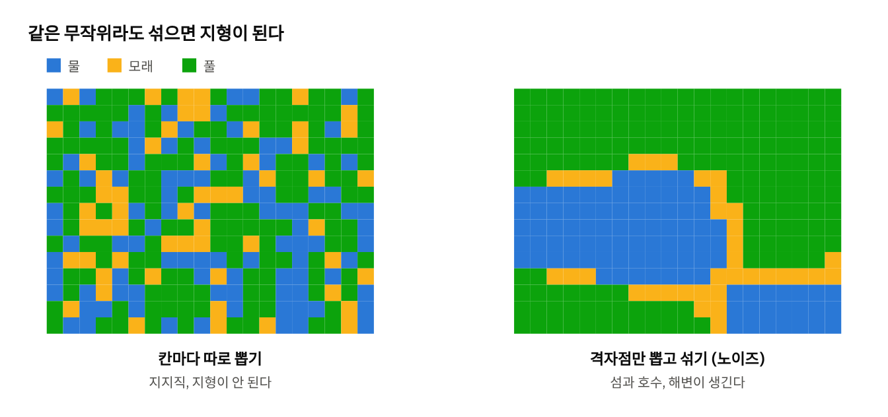
개념 1: 시드, 똑같이 나오는 무작위
노크우드의 섬은 2048×2048칸이에요. 400만 칸이 넘어요. 손으로는 그릴 수 없으니 규칙으로 만들어요.
그런데 진짜 무작위로 만들면 문제가 생겨요. 게임을 다시 켰을 때 섬 모양이 바뀌면 안 되고, 친구와 같이 할 때 두 컴퓨터의 섬이 달라도 안 돼요.
그래서 시드(seed)를 써요. 시드는 세계의 "설계도 번호"예요. 좌표와 시드를 넣으면 언제나 같은 숫자가 나오는 계산을 만들면, 무작위처럼 보이지만 항상 같은 결과가 나와요. 이런 계산을 해시라고 해요.
개념 2: 노이즈, 부드러운 무작위
칸마다 따로 무작위 숫자를 뽑으면 TV 지지직 화면처럼 점이 뒤섞여요. 호수나 숲은 몇십 칸씩 덩어리져 있어야 하죠.
해결책은 이래요. 먼저 널찍널찍한 격자의 꼭짓점에만 무작위 숫자를 정해요. 그리고 그 사이 칸들은 주변 꼭짓점 숫자를 부드럽게 섞어서 채워요. 그러면 산등성이처럼 부드럽게 오르내리는 숫자 지도가 나와요. 이걸 값 노이즈라고 해요.
그다음엔 높이에 따라 땅 종류를 정해요. 낮으면 물, 조금 높으면 모래, 더 높으면 풀이에요. 물과 풀 사이에 자연스럽게 모래 해변이 생겨요.
말로 먼저 쓰기
- 해시: (x, y, 시드)를 섞어 0~1 사이 숫자를 만든다. 같은 입력이면 항상 같은 출력.
- 노이즈: 칸이 속한 격자 네모의 네 꼭짓점에서 해시값을 구하고, 칸의 위치만큼 섞는다.
- 땅 종류: 노이즈가 0.25 미만이면 물, 0.32 미만이면 모래, 나머지는 풀.
Python으로
SEED = 20261029
def hash01(x, y, salt):
# (x, y, salt, 시드)를 뒤섞어 0~1 사이 수를 만든다. 같은 입력 → 같은 결과.
h = (x * 73856093) ^ (y * 19349663) ^ (salt * 83492791) ^ SEED
h = (h ^ (h >> 13)) * 1274126177
return ((h ^ (h >> 16)) & 0xFFFF) / 65535.0
def smooth(t):
return t * t * (3 - 2 * t) # 0→1을 처음과 끝에서 천천히 (smoothstep)
def noise(x, y, scale, salt):
gx, gy = math.floor(x / scale), math.floor(y / scale) # 속한 격자 네모의 왼쪽 위
fx, fy = smooth(x / scale - gx), smooth(y / scale - gy) # 네모 안에서의 위치(0~1)
top = hash01(gx, gy, salt) + (hash01(gx + 1, gy, salt) - hash01(gx, gy, salt)) * fx
bottom = hash01(gx, gy + 1, salt) + (hash01(gx + 1, gy + 1, salt) - hash01(gx, gy + 1, salt)) * fx
return top + (bottom - top) * fy # 위·아래를 다시 섞는다
def ground_at(tx, ty):
n = noise(tx, ty, 8.0, 1) # 8칸마다 격자점 하나
if n < 0.25:
return "water"
if n < 0.32:
return "sand"
return "grass"
이 코드로 가로 20칸, 세로 15칸을 찍어 보면 이렇게 나와요(# 풀, . 모래, ~ 물). 몇 번을 다시 실행해도 같아요.
####################
####################
####################
####################
#######...##########
##....~~~~~..#######
~~~~~~~~~~~~.#######
~~~~~~~~~~~~..######
~~~~~~~~~~~~~.######
~~~~~~~~~~~~~.######
~~~~~~~~~~~~~.#####.
##...~~~~~~~........
#######......~~~~~~~
###########..~~~~~~~
############.~~~~~~~
한 줄씩 보기
hash01의 큰 숫자들은 특별한 뜻이 있는 게 아니라, 입력을 고루 뒤섞는 데 잘 알려진 값들이에요.^는 비트를 뒤섞는 연산(XOR),>>는 비트를 오른쪽으로 미는 연산이에요. 지금은 "잘 섞는 믹서기"로만 알고 넘어가도 돼요.salt는 같은 시드에서 서로 다른 지도를 여러 장 뽑기 위한 번호예요. salt 1은 땅 높이, salt 2는 나무 밀도처럼 쓸 수 있어요.scale을 크게 하면 호수와 들판이 커지고, 작게 하면 자잘해져요.
C로
#define SEED 20261029u
float hash01(int x, int y, int salt) {
unsigned int h = (unsigned)x * 73856093u ^ (unsigned)y * 19349663u ^ (unsigned)salt * 83492791u ^ SEED;
h = (h ^ (h >> 13)) * 1274126177u;
return ((h ^ (h >> 16)) & 0xFFFF) / 65535.0f;
}
float smooth(float t) { return t * t * (3 - 2 * t); }
float noise2(float x, float y, float scale, int salt) {
int gx = (int)floorf(x / scale), gy = (int)floorf(y / scale);
float fx = smooth(x / scale - gx), fy = smooth(y / scale - gy);
float top = hash01(gx, gy, salt) + (hash01(gx + 1, gy, salt) - hash01(gx, gy, salt)) * fx;
float bottom = hash01(gx, gy + 1, salt) + (hash01(gx + 1, gy + 1, salt) - hash01(gx, gy + 1, salt)) * fx;
return top + (bottom - top) * fy;
}
한 줄씩 보기
unsigned는 "음수가 없는 정수"예요. 해시는 곱셈이 넘쳐서 돌아가는 걸 일부러 이용하는데, C에서는 unsigned일 때만 그 동작이 보장돼요.- 주의: Python은 숫자 크기에 한계가 없고 C는 32비트에서 넘쳐요. 그래서 같은 시드라도 두 예제의 지도는 다르게 나와요. 멀티플레이에서 두 컴퓨터가 같은 세계를 만들려면, 같은 언어·같은 코드로 계산해야 해요.
노크우드에서는 (Godot)
노크우드의 섬 생성기(scripts/test_map_v02/island.gd)를 열어 보면, 방금 본 것과 거의 같은 코드가 있어요.
const SIZE := 2048 # 섬 크기(칸)
const CHUNK := 32 # 구역 하나 = 32×32칸
const SEED := 20261029
static func noise(x: float, y: float, scale: float, salt: int) -> float:
var gx := floori(x / scale)
var gy := floori(y / scale)
var fx := smoothstep(0.0, 1.0, x / scale - gx)
var fy := smoothstep(0.0, 1.0, y / scale - gy)
var top := lerpf(hash01(gx, gy, salt), hash01(gx + 1, gy, salt), fx)
var bottom := lerpf(hash01(gx, gy + 1, salt), hash01(gx + 1, gy + 1, salt), fx)
return lerpf(top, bottom, fy)
11장에서 본 lerp 와 smoothstep 이 여기서도 나와요. Python 예제의 a + (b - a) * f 가 바로 lerpf(a, b, f) 예요.
노크우드는 여기에 세 가지를 더 해요.
- 꼭 지킬 규칙을 박아 둬요. 파일 첫머리에 "맵 가장자리는 모두 바다, 육지와 바다 사이는 끊김 없는 모래 해안, 선착장 5개"가 적혀 있어요. 노이즈에만 맡기면 섬이 두 개로 쪼개지거나 시작 지점이 물속일 수 있거든요. 그래서 섬 모양은 "중심에서의 거리 + 약간의 노이즈"로 만들어요. 큰 모양은 규칙으로, 자잘한 모양은 노이즈로 만드는 거예요.
- 구역 단위로 필요할 때만 만들어요. 400만 칸을 한 번에 만들면 로딩이 길고 메모리도 많이 들어요. 그래서 32×32칸 구역으로 나누고, 플레이어 근처 구역만 만들어요. 시드 덕분에 어느 구역을 언제 만들든 결과는 같아요. 멀리 있는 구역의 슬라임은 잠들게(8장의
dormant) 해서 계산을 아껴요. - 생성 규칙을 월드와 함께 저장해요(
world_rules.gd). 게임을 업데이트해서 숫자를 바꿔도, 예전에 만든 월드는 예전 규칙으로 만들어져요. 안 그러면 업데이트하자마자 내가 지은 집 아래 땅이 바다로 바뀔 수 있어요.
!흔한 실수
random()으로 땅 만들기. 게임을 켤 때마다 세계가 바뀌어요. 좌표에서 계산되는 해시를 쓰세요.- 노이즈에만 맡기기. 갈 수 없는 섬, 물속 시작 지점이 생겨요. 꼭 지킬 규칙은 코드로 따로 확인하세요.
- 생성 코드를 고치고 예전 월드를 잊기. 노크우드는 생성기 버전 번호(
GENERATOR_VERSION)를 두고, 버전이 다르면 막아요.
✓직접 해보기
SEED를 아무 숫자로 바꿔 보세요. 전혀 다른 지도가 나오지만, 다시 같은 숫자로 돌리면 같은 지도가 돌아와요.scale을 4와 16으로 바꿔 보세요. 호수 크기가 어떻게 달라지나요?- salt 2로 노이즈를 하나 더 만들고, 풀밭에서 그 값이 0.7보다 크면 나무를 심어 보세요.
12장 정리
- 같은 시드를 넣으면 언제나 같은 세계가 만들어진다(해시).
- 격자점에서만 무작위 값을 뽑고 섞으면 자연스러운 지형이 된다(값 노이즈).
- 큰 세계는 구역으로 나눠 필요할 때만 만들고, 꼭 지킬 규칙은 따로 확인한다.
| 시드 | 세계를 만드는 설계도 번호 |
|---|---|
| 해시 | 같은 입력에 항상 같은 값을 내는 계산 |
| 노이즈 | 부드럽게 오르내리는 무작위 값 |
| 구역(청크) | 큰 지도를 나눈 조각(노크우드는 32×32칸) |
확인 문제
random()으로 땅을 만들면 생기는 문제는?
노이즈의 scale을 크게 하면?
- A. 호수와 들판이 커진다
- B. 지형이 자잘해진다
- C. 세계 크기가 커진다
- D. 시드가 바뀐다
노크우드가 생성 규칙을 월드와 함께 저장하는 이유는?
정답과 해설은 부록 A에 있어요.
저장과 불러오기
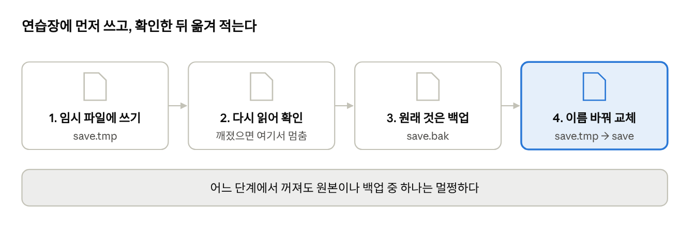
개념 1: 저장은 상태를 글로 적는 것
1장에서 게임은 상태(변수)를 기억한다고 했죠. 저장은 그 상태를 파일에 적어 두는 거예요. 불러오기는 파일을 읽어 변수에 다시 넣는 것이고요.
어떤 상태를 저장해야 할까요? 다시 만들 수 없는 것만 저장해요. 플레이어 위치, 가방, 날짜는 저장해야 해요. 반면 섬의 땅 모양은 시드만 있으면 다시 만들 수 있으니(12장) 시드 하나만 저장해요.
개념 2: 저장 중에 꺼지면?
가장 단순한 저장은 "저장 파일을 열고 덮어쓴다"예요. 그런데 쓰는 도중에 전원이 나가면, 파일은 반쯤 쓰인 채로 남아요. 예전 저장은 이미 지워졌고, 새 저장은 깨졌어요. 몇 시간 플레이한 게 사라져요.
그래서 안전한 저장은 이렇게 해요.
- 임시 파일(
save.json.tmp)에 먼저 쓴다 - 임시 파일을 다시 읽어서 제대로 쓰였는지 확인한다
- 원래 저장을 백업(
save.json.bak)으로 옮긴다 - 임시 파일의 이름만 바꿔 진짜 저장으로 만든다
이름 바꾸기는 순식간에 끝나서 중간에 꺼져도 안전해요. 어느 단계에서 실패해도 원래 저장이나 백업 중 하나는 멀쩡해요.
불러올 때는 저장을 먼저 읽고, 깨져 있으면 백업을 읽어요.
Python으로
import json, os
def save_game(path, state):
tmp = path + ".tmp"
try:
with open(tmp, "w", encoding="utf-8") as f: # 1) 임시 파일에 쓴다
json.dump(state, f, ensure_ascii=False)
with open(tmp, encoding="utf-8") as f: # 2) 다시 읽어 확인
json.load(f)
if os.path.exists(path):
os.replace(path, path + ".bak") # 3) 원래 저장은 백업으로
os.replace(tmp, path) # 4) 이름만 바꿔 교체
return True
except (OSError, ValueError):
return False # 실패해도 원래 저장은 그대로
def load_game(path):
for candidate in (path, path + ".bak"): # 저장 → 백업 순서로
try:
with open(candidate, encoding="utf-8") as f:
return json.load(f)
except (OSError, ValueError):
continue # 안 되면 다음 후보
return None # 둘 다 없으면 새 게임
# F5를 누르면
ok = save_game("save.json", {"player": player, "bag": bag, "time": time_of_day})
한 줄씩 보기
json.dump는 사전·목록을 글자로 바꿔 파일에 써요. 그래서 상태를 사전에 모아 두면 저장이 한 줄이에요. 1장부터 상태를 사전에 담아 온 이유예요.ensure_ascii=False는 한글을 한글 그대로 저장하라는 뜻이에요.os.replace는 "이름 바꾸기(있으면 덮어쓰기)"예요. 파일 내용을 복사하지 않아서 순식간에 끝나요.- 함수가
True/False를 돌려주니, 실패하면 화면에 "저장 실패"를 띄울 수 있어요.
C로
int save_game(const char *path, const Player *p, float time_of_day) {
char tmp[256], bak[256];
snprintf(tmp, sizeof tmp, "%s.tmp", path); // "save.txt.tmp" 만들기
snprintf(bak, sizeof bak, "%s.bak", path);
FILE *f = fopen(tmp, "w"); // 1) 임시 파일
if (f == NULL) return 0;
int ok = fprintf(f, "%f %f %d %f\n", p->x, p->y, p->hp, time_of_day) > 0;
ok = (fclose(f) == 0) && ok; // 닫기까지 성공해야 끝까지 쓴 것
if (!ok) return 0;
remove(bak); // 예전 백업 지우기
rename(path, bak); // 3) 원래 저장 → 백업 (처음이면 실패해도 괜찮다)
return rename(tmp, path) == 0; // 4) 임시 → 저장
}
한 줄씩 보기
- C에는 JSON이 없어서 숫자를 빈칸으로 나눠 한 줄에 적었어요. 읽을 때는
fscanf(f, "%f %f %d %f", ...)로 같은 순서로 읽어요. 쓰는 순서와 읽는 순서가 조금만 달라도 값이 뒤섞여요. snprintf는 글자 상자 크기를 넘지 않게 글자를 만들어요. 10장의strncpy와 같은 안전장치예요.fclose까지 확인하는 이유가 있어요. 디스크에 실제로 쓰는 일은 닫을 때 일어날 수 있거든요.- 주의: Windows에서는 대상 파일이 이미 있으면
rename이 실패해요. 그래서 먼저 백업을 지우고, 원래 저장을 백업으로 옮겨 자리를 비운 뒤 넣어요.
노크우드에서는 (Godot)
노크우드의 저장(scripts/world_store.gd 의 save_world)은 같은 순서에 검사를 더 붙였어요(줄임).
func save_world(data: Dictionary) -> bool:
if not valid(data): # 0) 저장할 내용이 올바른가
error = "유효하지 않은 상태: 기존 저장을 보존했습니다."
return false
var payload := JSON.stringify(data)
var wrapper := JSON.stringify({"payload": payload, "sha256": payload.sha256_text()})
if wrapper.to_utf8_buffer().size() > MAX_FILE_BYTES: # 너무 큰 저장은 거부
error = "저장 크기 제한 초과: 기존 저장을 보존했습니다."
return false
var file := FileAccess.open(path + ".tmp", FileAccess.WRITE) # 1) 임시 파일
file.store_string(wrapper)
file.close()
if _read(path + ".tmp").is_empty(): # 2) 다시 읽어 확인
error = "저장 내용 검증 실패: 기존 저장을 보존했습니다."
return false
if FileAccess.file_exists(path) and DirAccess.copy_absolute(path, path + ".bak") != OK: # 3) 백업
error = "백업 실패: 기존 저장을 보존했습니다."
return false
if DirAccess.rename_absolute(path + ".tmp", path) != OK: # 4) 교체
error = "저장 교체 실패: 기존 저장과 백업을 보존했습니다."
return false
return true
한 줄씩 보기
- 1~4단계는 Python 예제와 같아요. 언어가 달라도 안전한 저장의 순서는 같아요.
- 0단계
valid(data): 저장하기 전에 내용부터 검사해요. 버그로 체력이 -3이 됐다면, 그걸 저장해서 좋은 저장까지 망치지 않게요. - sha256은 내용의 "지문"이에요. 글자 하나만 바뀌어도 지문이 달라져요. 불러올 때 지문을 다시 계산해 비교하면, 파일이 중간에 깨졌는지 알 수 있어요.
- 실패할 때마다 왜 실패했는지를
error에 남겨요. 화면에 그대로 보여 주고, "기존 저장을 보존했습니다"로 플레이어를 안심시켜요.
또 하나, 노크우드는 저장 형식에 버전 번호를 넣어요. 게임이 커지면서 저장할 내용이 늘어나면(가방, 건축, 바닥 아이템…) 버전을 올리고, 예전 버전 저장을 읽으면 새 형식으로 바꿔요(upgrade_inventory, upgrade_building …). 바꾸기 전에는 .v2.bak 처럼 버전별 백업도 남겨요.
!흔한 실수
- 저장 파일을 바로 덮어쓰기. 쓰는 도중 꺼지면 모두 잃어요.
- 불러오다 실패하면 새 게임으로 덮어쓰기. 깨진 파일도 고칠 수 있을지 몰라요. 노크우드는 읽지 못한 원본을 절대 자동으로 덮어쓰지 않아요.
- 버전 번호 없이 저장 형식 바꾸기. 업데이트하자마자 예전 저장을 못 읽게 돼요.
- 모든 걸 저장하기. 다시 계산할 수 있는 것까지 저장하면 파일이 커지고, 저장 내용과 규칙이 어긋날 수 있어요.
✓직접 해보기
- F5로 저장하고, 게임을 켤 때
load_game으로 위치·가방을 되살려 보세요. - 저장 파일을 메모장으로 열어 끝부분을 지워 일부러 깨뜨려 보세요. 백업에서 제대로 불러오나요?
- 저장할 때
"version": 1을 같이 넣어 보세요. 나중에 형식을 바꿀 때 고마워할 거예요.
13장 정리
- 저장은 다시 만들 수 없는 상태만 파일에 적는 것이다.
- 임시 파일에 쓰고 → 확인하고 → 원본을 백업하고 → 이름을 바꿔 교체한다.
- 저장 형식에 버전 번호를 넣어 나중에 형식이 바뀌어도 예전 저장을 읽는다.
| 임시 파일 | 저장을 먼저 써 보는 파일(.tmp) |
|---|---|
| 백업 | 이전 저장을 남겨 둔 파일(.bak) |
| 저장 버전 | 저장 형식이 몇 번째 모양인지 나타내는 번호 |
| 해시 지문(sha256) | 내용이 바뀌었는지 확인하는 값 |
확인 문제
저장 파일을 바로 덮어쓰면 위험한 이유는?
안전한 저장 순서로 알맞은 것은?
- A. 백업 → 임시 쓰기 → 확인 → 교체
- B. 임시 쓰기 → 확인 → 백업 → 교체
- C. 교체 → 임시 쓰기 → 백업
- D. 확인 → 교체 → 임시 쓰기
섬의 땅 모양을 저장하지 않아도 되는 이유는?
정답과 해설은 부록 A에 있어요.
함께 하기: 멀티플레이의 기본
개념 1: 심판은 한 명
두 사람이 각자 컴퓨터에서 "내가 슬라임을 잡았다"고 계산하면 어떻게 될까요? 슬라임 하나로 젤리가 두 개 나오거나, 한 화면에서는 살아 있고 다른 화면에서는 죽어 있어요.
그래서 멀티플레이 게임은 판정하는 컴퓨터를 하나만 둬요. 노크우드에서는 방을 만든 사람(호스트)의 컴퓨터예요.
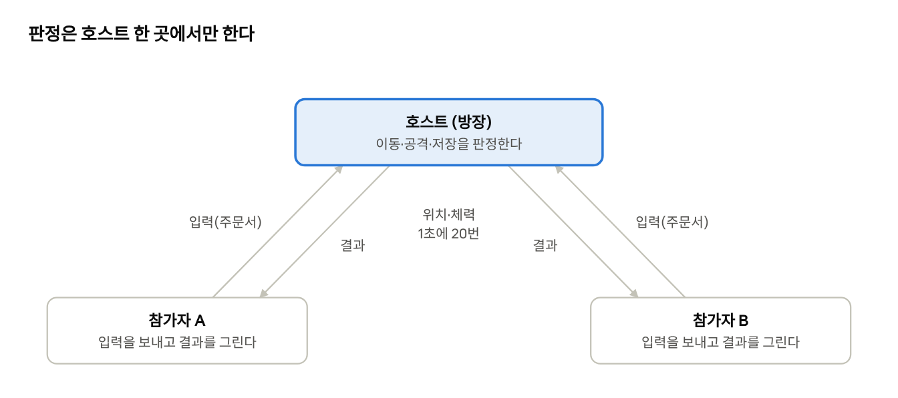
참가자는 자기 입력만 호스트에 보내고, 호스트가 계산한 결과를 받아 그리기만 해요. 5장에서 입력을 "주문서"로 만들어 둔 게 여기서 빛을 봐요. 주문서를 인터넷으로 보내기만 하면 되니까요.
개념 2: 끊기는 움직임을 이어 그리기
호스트는 위치를 1초에 20번 보내요. 화면은 1초에 60번 그려지니, 받은 위치에 바로 놓으면 친구 캐릭터가 뚝뚝 끊겨 움직여요.
해결책은 조금 늦게 보여 주는 것이에요. 받은 위치를 시각과 함께 쌓아 두고, 화면에는 0.1초 전의 위치를 그려요. 0.1초 전이면 보통 그 앞뒤 위치를 둘 다 받아 둔 상태라서, 두 위치 사이를 lerp(11장)로 부드럽게 이을 수 있어요. 이걸 보간이라고 해요.
말로 먼저 쓰기
- 위치를 받을 때마다 [받은 시각, 위치]를 목록에 추가한다 (최근 8개만 보관)
- 그릴 때, 보여 줄 시각 = 지금 − 0.1초
- 목록에서 그 시각의 앞뒤 두 기록을 찾는다
- 두 위치 사이를 시각 비율만큼 섞는다
- 두 위치가 너무 멀면(순간이동, 부활) 섞지 않고 바로 나중 위치로 간다
Python으로
DELAY = 0.1 # 0.1초 늦게 보여 준다
SNAP = 160 # 이보다 멀면 이어 그리지 않는다
def sample(samples, at):
# samples = [(받은 시각, (x, y)), ...] 시간 순서대로
if not samples:
return None
if at <= samples[0][0]:
return samples[0][1] # 가장 오래된 것보다 이르면 그것
for (t0, p0), (t1, p1) in zip(samples, samples[1:]):
if at <= t1: # at이 t0~t1 사이에 있다
if math.dist(p0, p1) > SNAP:
return p1 # 순간이동은 섞지 않는다
f = (at - t0) / max(0.001, t1 - t0) # 사이 어디쯤인가(0~1)
return (p0[0] + (p1[0] - p0[0]) * f, p0[1] + (p1[1] - p0[1]) * f)
return samples[-1][1] # 최신보다 늦으면 최신 위치
# 그릴 때
shown = sample(friend_samples, time.monotonic() - DELAY)
한 줄씩 보기
zip(samples, samples[1:])은 "이웃한 두 개씩 짝짓기"예요. (1번, 2번), (2번, 3번)… 처럼요.f는 "t0에서 t1까지 가는 길의 몇 퍼센트인가"예요. 그만큼 두 위치를 섞어요(lerp).- 최신 기록보다 늦으면 최신 위치에 멈춰요. "아마 계속 걸었겠지" 하고 앞질러 짐작하지 않아요. 틀린 짐작은 나중에 되돌아가는 어색한 움직임을 만들거든요.
C로는 목록 대신 크기 8짜리 배열을 쓰고, 같은 반복문을 그대로 옮기면 돼요. 인터넷으로 주고받는 부분은 언어보다 라이브러리에 따라 다르니(Python은 socket, C는 ENet 등) 여기서는 생략할게요.
노크우드에서는 (Godot)
노크우드의 이어 그리기(scripts/network/net_smoothing.gd)는 Python 예제와 거의 줄 단위로 같아요. 사실 Python 예제가 이 파일을 옮긴 거예요.
## 참가자 화면의 움직임 다듬기. 표시 전용 — 위치·판정은 여전히 호스트가 정한다.
const DELAY := 100.0 # ms
const KEEP := 8
const SNAP := 160.0 # 두 위치가 이만큼 떨어지면 이어 그리지 않고 바로(순간이동·부활)
func push(node: Node2D, position: Vector2) -> void:
var samples: Array = tracked.get(node, [])
samples.append([Time.get_ticks_msec(), position])
if samples.size() > KEEP: samples.pop_front()
tracked[node] = samples
# 조준은 그려지는(0.1초 전) 자리가 아니라 받은 최신 자리로 — 움직이는 적을 빗맞히지 않게.
node.set_meta("net_latest", position)
한 줄씩 보기
- 첫 줄 설명에 원칙이 있어요. 표시 전용. 9장의 손맛처럼 규칙을 바꾸지 않아요.
- 마지막 줄이 재밌는 부분이에요. 화면에는 0.1초 전 위치를 그리지만, 조준은 최신 위치로 해요. 그린 자리를 보고 조준하면 움직이는 적을 계속 살짝 뒤쪽으로 때리게 돼요. 보여 주는 것과 판정하는 것을 나눈 덕분에 둘 다 챙길 수 있어요.
마지막으로, 노크우드는 서로 다른 버전의 게임끼리 접속하는 것을 막아요(scripts/network/session.gd).
const GAME_VERSION := "0.6.40"
## 호환 번호: 번호가 같으면 게임 버전이 달라도 함께 접속, 다르면 막고 안내.
## 올리는 기준 = 그림·규칙 데이터·통신 규약이 바뀔 때. 코드 수정만이면 그대로.
const COMPAT_VERSION: int = 1
호스트와 참가자의 규칙 파일이 다르면, 같은 공격도 서로 다르게 계산돼요. 그래서 "서로 말이 통하는 버전인가"를 접속할 때 가장 먼저 확인해요.
!흔한 실수
- 참가자 컴퓨터에서도 판정하기. 화면마다 결과가 달라져요. 노크우드의 플레이어·슬라임 코드는 거의 모든 판정 앞에
if not simulation_authority: return(판정 담당이 아니면 그만)이 붙어 있어요. - 받은 입력을 그대로 믿기. 이상한 값(무한대, 너무 긴 방향)이 오면 버려야 해요. 노크우드는
if not direction.is_finite(): return으로 걸러내고 방향 길이도 1로 자르죠. - 혼자 하는 게임을 다 만든 뒤 멀티를 붙이기. 처음부터 "입력 → 주문서", "판정은 한 곳"으로 만들어야 나중에 덜 고쳐요. 멀티가 목표라면 이 두 가지는 처음부터 지키세요.
✓직접 해보기
- 종이에 네모 세 개(호스트, 참가자 A, B)를 그리고, A가 슬라임을 때릴 때 무엇이 어느 쪽으로 가는지 화살표로 그려 보세요.
- Python의
sample함수에 시각 0초 (0, 0), 0.05초 (10, 0)을 넣고 0.025초를 물어 보세요. (5, 0)이 나오나요?
14장 정리
- 판정은 한 컴퓨터(호스트)에서만 하고, 참가자는 입력을 보내고 결과를 그린다.
- 받은 위치를 조금 늦게(0.1초) 보여 주며 두 위치 사이를 보간해 부드럽게 만든다.
- 보여 주는 것과 판정하는 것을 나누고, 버전이 맞는지 먼저 확인한다.
| 호스트 | 판정과 저장을 맡는 컴퓨터 |
|---|---|
| 참가자(클라이언트) | 입력을 보내고 결과를 받아 그리는 컴퓨터 |
| 보간 | 두 값 사이를 이어 채우는 것 |
| 호환 번호 | 서로 접속해도 되는 버전인지 나타내는 번호 |
확인 문제
참가자 컴퓨터에서도 판정하면 생기는 문제는?
시각 0초에 (0, 0), 0.05초에 (10, 0)을 받았다. 0.025초의 보간 위치는?
- A. (0, 0)
- B. (2.5, 0)
- C. (5, 0)
- D. (10, 0)
노크우드가 화면엔 0.1초 전 위치를 그리면서도 조준은 최신 위치로 하는 이유는?
정답과 해설은 부록 A에 있어요.
끝까지 만들기: 검사·성능·작업 습관
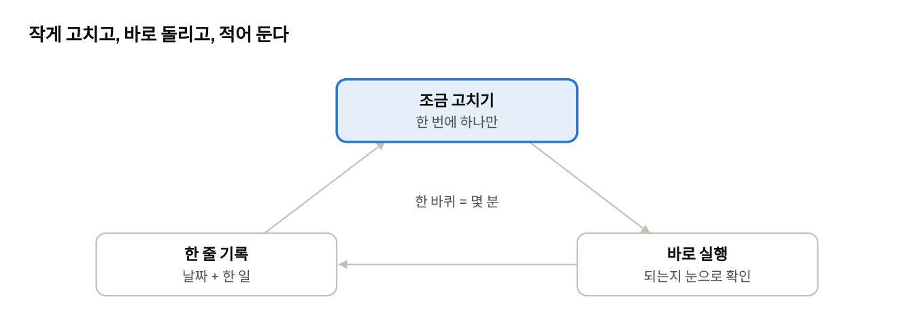
검사: 코드가 코드를 확인한다
게임을 켜서 직접 해 보는 것도 검사지만, 기능이 50개가 되면 매번 다 해 볼 수 없어요. 그래서 "이 입력이면 이 결과가 나와야 한다"를 코드로 적어 두고 한 번에 돌려요.
7장에서 규칙을 화면과 떼어 둔 이유가 여기서 나와요. 화면이 필요 없는 함수는 검사하기 아주 쉬워요.
Python으로
# test_slime.py — 실행: python test_slime.py
from slime import add_item
bag = [None] * 3
assert add_item(bag, "jelly", 150) == 0 # 64 + 64 + 22, 남는 것 없음
assert bag[2] == {"item": "jelly", "count": 22}
assert add_item(bag, "jelly", 50) == 8 # 3번 칸에 42개만 들어간다
assert add_item(bag, "wood", 1) == 1 # 빈 칸이 없다
print("모두 통과!")
assert 는 "이건 반드시 참이어야 한다"예요. 거짓이면 그 자리에서 멈추고 몇 번째 줄인지 알려줘요. 가방 코드를 고칠 때마다 이 파일을 돌리면, 고치다 망가뜨린 걸 바로 알 수 있어요.
C로
#include <assert.h>
void test_bag(void) {
memset(bag, 0, sizeof bag); // 가방 비우기
assert(add_item("jelly", 150) == 0);
assert(bag[2].count == 22);
}
C의 assert 도 똑같이 동작해요.
노크우드에서는 저장 실패까지 일부러 만들어 검사해요(scripts/testing/save_failure_fixture.gd, 줄임).
check.call(world.save_now(), "isolated device fixture saves initial world")
var hash_before := FileAccess.get_sha256(path) # 저장 파일의 지문을 미리 잰다
DirAccess.make_dir_absolute(path + ".tmp") # 임시 파일 자리에 폴더를 만들어 쓰기를 막는다
check.call(not world.save_now() and world.save_failed, "real failed save exposes persistent warning")
check.call(FileAccess.get_sha256(path) == hash_before, "failed save preserves original bytes")
읽는 법: 일부러 임시 파일을 못 쓰게 만든 뒤 저장을 시켜요. 그러고 세 가지를 확인해요. 저장이 실패로 나오는가, 화면에 경고가 뜨는가, 원래 저장 파일의 지문이 그대로인가. 13장에서 만든 안전장치가 정말 작동하는지 코드가 대신 확인해 주는 거예요.
성능: 느려지면 무엇부터 볼까
게임이 끊기기 시작하면 대부분 이 세 가지 중 하나예요.
| 원인 | 노크우드의 해결 | 책에서 나온 곳 |
|---|---|---|
| 같은 일을 계속 다시 함 | 파일·계산 결과를 한 번만 하고 기억(캐시) | 7장 rule_data.gd |
| 안 해도 되는 일을 함 | 멈춘 슬라임은 충돌 계산 건너뛰기, 먼 구역은 잠들기 | 8장, 12장 |
| 물건이 너무 많음 | 움직이지 않는 물건 여러 개를 노드 하나가 한꺼번에 그리기 | 아래 |
마지막 줄의 코드예요(scripts/test_map_v02/prop_batch.gd).
## 움직이지 않는 물체 묶음 그리기: 스프라이트 노드 여러 개 대신 노드 하나가 그린다.
var rows: Array = []
func _draw() -> void:
for row in rows: # 물건 목록을 돌며
draw_texture_rect(row[0], ...) # 한 노드 안에서 차례로 그린다
돌멩이 1000개를 돌멩이 부품 1000개로 만들면, 엔진은 부품 1000개를 매 프레임 돌봐요. 목록 하나를 가진 부품 1개로 만들면 훨씬 가벼워요. Python으로 치면 돌멩이 객체를 많이 만들지 말고, 좌표 목록 하나를 for 로 돌며 그리는 것과 같아요.
중요한 건 느려지기 전에는 미리 최적화하지 않는 것이에요. 처음에는 읽기 쉬운 코드로 만들고, 실제로 끊길 때 어디가 느린지 재고 고치세요.
작업 습관: 포기하지 않는 법
노크우드를 만들면서 자리 잡은 습관들이에요.
- 한 번에 하나만 고친다. 고치고, 실행하고, 되면 다음으로.
- 자주 저장하고 되돌릴 수 있게 한다. 노크우드는 Git으로 버전을 관리해요. 처음에는 "동작하는 상태일 때 폴더를 통째로 복사해 두기"만 해도 충분해요.
- 기록한다. 날짜와 한 줄. 한 달 뒤의 나는 지금을 기억 못 해요(3장).
- 임시는 임시라고 적는다.
[임시값], "임시 도형". 그래야 마음 편히 넘어갈 수 있어요. - 오래된 걸 바로 지우지 않는다. 노크우드는 안 쓰는 코드를
legacy폴더로, 안 쓰는 그림은 "대체됨" 표시만 해 둬요. 나중에 다시 필요할 수 있거든요.
다음 단계
이 책을 끝까지 따라왔다면 다음을 추천해요.
- 슬라임 잡기를 완성하세요. 시작 화면, 게임 오버, 다시 하기를 붙이면 "끝난 게임"이 돼요. 작아도 끝낸 게임 하나가 못 끝낸 큰 게임보다 훨씬 많이 가르쳐 줘요.
- 같은 게임을 Godot로 다시 만들어 보세요. 이번에는 엔진이 무엇을 대신 해 주는지 눈에 보일 거예요.
- 자기 게임의 핵심 놀이를 정하고, 3장의 순서대로 한 단계씩 쌓아 가세요.
이 책의 예제를 합친 전체 코드(Python slime.py, C slime.c)는 이 책과 함께 파일로 제공해요. 막히면 장별 코드와 비교해 보세요.
✓직접 해보기
test_slime.py를 만들고 가방 검사를 돌려 보세요. 일부러add_item의min을 지우면 어느 줄에서 멈추나요?- 슬라임을 200마리 만들어 보세요. 끊기나요? 끊긴다면 멀리 있는 슬라임을 잠재워 보세요.
- 진행 기록에 "15장 끝"을 적으세요. 수고했어요!
15장 정리
- "이 입력이면 이 결과"를 코드로 적어 두고 자동으로 검사한다.
- 느려지면 반복되는 일, 안 해도 되는 일, 너무 많은 물건부터 본다.
- 한 번에 하나 고치고, 바로 실행하고, 기록한다.
| assert | 반드시 참이어야 하는 조건을 확인하는 문장 |
|---|---|
| 자동 검사(테스트) | 코드가 코드를 확인하는 것 |
| 최적화 | 느린 곳을 찾아 빠르게 고치는 일 |
확인 문제
최적화는 언제 하는 것이 좋을까요?
- A. 코드를 쓰기 전에
- B. 실제로 느려졌을 때 원인을 재고 나서
- C. 매일 한 번씩
- D. 게임을 출시한 뒤에만
노크우드의 저장 실패 검사가 확인하는 세 가지는?
움직이지 않는 돌멩이 1000개를 가볍게 그리는 방법은?
정답과 해설은 부록 A에 있어요.
확인 문제 정답과 해설
0장 AI 시대에 코딩을 알아야 하는 이유
- 정답 B 프레임 수에 따라 속도가 달라지는 문제, 0으로 나누기, 공격 간격 누락은 특정 상황에서만 드러납니다.
- 예: "대각선 이동에 정규화가 빠져서 41% 빨라져. 방향 벡터를 길이 1로 맞춰 줘." 문제를 이 책의 용어로 짚어 주면 한 번에 고칠 수 있습니다.
1장 게임은 무엇으로 이루어져 있나
- 입력 읽기 → 규칙 적용 → 그리기
- 정답 C 그리기는 상태를 읽기만 합니다. 체력을 바꾸는 일은 규칙 단계의 몫입니다.
- (100, 200). 화면 좌표에서 y는 아래로 갈수록 커집니다.
2장 도구 고르기와 첫 창 띄우기
- 그린 그림이 화면에 나타나지 않아 까만 화면만 보입니다.
- 정답 B 원리가 다 보이는 도구로 먼저 만들어 보면, 나중에 엔진이 무엇을 대신 해 주는지 정확히 보입니다.
- (308, 228). 너비와 높이의 절반(12)씩을 뺍니다.
3장 첫 게임은 작게, 그리고 끝까지
- 정답 D 멀티플레이는 핵심이 재밌어진 다음에 붙이는 기능입니다.
- 규칙이 바뀌면 그림을 다시 그려야 하는 일이 많기 때문입니다. 움직임과 충돌이 정해진 뒤 그림을 입히는 것이 효율적입니다.
- 게임이 깨졌을 때 무엇 때문인지 알기 어렵습니다.
4장 게임 루프와 시간
- 200 × 0.05 = 10픽셀
- 정답 B 0.016 × 200 = 3.2에서 0.2가 매번 버려집니다. 위치·속도·시간은 소수로 다룹니다.
- 남은 시간이 0보다 작아지지 않게 하기 위해서입니다.
5장 입력과 이동
- (1, -1), 길이 √2 ≈ 1.41
- 정답 B 움직이지 않을 때 방향을 덮어쓰면 캐릭터가 항상 같은 쪽을 보게 됩니다.
- 휴대폰 터치 조작과 멀티플레이(친구의 입력)
6장 충돌과 공격 판정
- 정면 기준 양쪽 90도, 즉 앞쪽 반원이 됩니다.
- 정답 C 가로와 세로를 따로 검사하기 때문에 막힌 쪽만 취소됩니다.
- 나무 잎 뒤로 걸어 들어갈 수 있게 해서 길이 답답하지 않게 하려고입니다.
7장 숫자는 코드 밖에: 규칙과 데이터
- 기본값(예제에서는 200)이 그대로 쓰입니다.
- 정답 C 첫 번째는 1을 주고 0.5를 남겨 두었다가, 두 번째에 1.5 + 0.5 = 2를 줍니다.
- 게임을 켜지 않고도 자동 검사를 돌릴 수 있고, 여러 곳에서 같은 규칙을 씁니다.
8장 적 만들기: 감지·추적·귀환
- 적이 플레이어를 따라다니다 한곳에 뭉쳐 맵 배치가 깨집니다.
- 정답 B 공격 대기 시간을 두면 정해진 간격으로만 공격합니다.
- 집으로 가는 길이 벽에 막히면 영원히 벽에 붙어 있을 수 있기 때문입니다.
9장 손맛: 피해 숫자·깜빡임·소리
- 효과를 끄거나 바꿀 때 피해까지 사라져 규칙이 깨지기 때문입니다.
- 정답 B 어디서 왜 줄었는지 몰라도, 줄어든 체력만 보고 숫자를 띄웁니다.
- 올라가는 소리는 긍정, 내려가는 소리는 부정으로 들리기 때문입니다.
10장 인벤토리와 아이템
- 0개. 64 + 64 + 22 = 150
- 정답 B 들어갈 수 있는 만큼만 넣어야 한 칸의 한도가 지켜집니다.
- 품질(grade)이 다를 때입니다. 이름과 품질이 모두 같아야 쌓입니다.
11장 시간이 흐르는 세계: 낮·밤·날씨
- 3
- 정답 C 누적 확률은 0.55, 0.75, 0.9, 1.0입니다. 0.8은 0.75와 0.9 사이라 비입니다.
- 작물 성장은 현실 시간으로 흐르고, 낮과 밤은 월드가 열려 있을 때만 흐릅니다.
12장 넓은 세계 만들기: 시드·노이즈·구역
- 게임을 켤 때마다, 그리고 컴퓨터마다 세계가 달라집니다.
- 정답 A 격자점 사이가 넓어져 큰 덩어리 지형이 됩니다.
- 게임을 업데이트해 숫자가 바뀌어도 예전 월드가 예전 모습 그대로 만들어지게 하려고입니다.
13장 저장과 불러오기
- 쓰는 도중 꺼지면 예전 저장은 지워지고 새 저장은 깨진 채 남습니다.
- 정답 B 어느 단계에서 실패해도 원본이나 백업 중 하나가 남는 순서입니다.
- 시드만 있으면 다시 만들 수 있기 때문입니다.
14장 함께 하기: 멀티플레이의 기본
- 화면마다 결과가 달라집니다(예: 젤리가 두 개 나오거나, 한쪽에서만 슬라임이 죽음).
- 정답 C 정확히 중간 시각이므로 두 위치의 중간입니다.
- 그려진 자리를 보고 조준하면 움직이는 적의 뒤쪽을 때리게 되기 때문입니다.
15장 끝까지 만들기: 검사·성능·작업 습관
- 정답 B 처음에는 읽기 쉬운 코드로 만들고, 실제로 느린 곳을 재서 고칩니다.
- 저장이 실패로 나오는가, 화면에 경고가 뜨는가, 원래 저장 파일의 지문이 그대로인가.
- 돌멩이마다 부품을 만들지 않고, 좌표 목록을 가진 부품 하나가 한꺼번에 그립니다.
예제 전체 코드: Python
책의 장별 예제를 한 파일로 합친 "슬라임 잡기"예요. pip install pygame 후 python slime.py로 실행해요. 방향키 또는 WASD로 이동, 스페이스로 공격, F5로 저장해요. 파일 받기
# 슬라임 잡기 (Python + pygame) — 가이드 전체 예제를 합친 완성본
import json
import math
import os
import pygame
# ---------- 7장: 숫자는 파일에서 ----------
DEFAULTS = {"player_speed": 200, "player_hp": 5, "attack_range": 48,
"attack_cooldown": 0.4, "slime_speed": 70, "slime_hp": 3,
"slime_sight": 220, "slime_reach": 20, "slime_hit_cooldown": 1.0}
def load_rules(path):
rules = dict(DEFAULTS) # 기본값을 먼저 깔고
if os.path.exists(path):
try:
with open(path, encoding="utf-8") as f:
rules.update(json.load(f)) # 파일에 있는 값만 덮어쓴다
except (OSError, ValueError):
pass # 파일이 깨져도 기본값으로 계속
return rules
RULES = load_rules("rules.json")
# ---------- 6장: 충돌 ----------
def overlaps(a, b):
# a, b = (x, y, w, h) 사각형. 서로 겹치면 True
return a[0] < b[0] + b[2] and b[0] < a[0] + a[2] and \
a[1] < b[1] + b[3] and b[1] < a[1] + a[3]
WALLS = [(200, 150, 32, 180), (400, 300, 160, 32)]
def move_with_walls(x, y, dx, dy, size):
# x와 y를 따로 움직여 보고, 벽에 걸리는 쪽만 취소한다(벽을 따라 미끄러진다)
nx = x + dx
if any(overlaps((nx - size / 2, y - size / 2, size, size), w) for w in WALLS):
nx = x
ny = y + dy
if any(overlaps((nx - size / 2, ny - size / 2, size, size), w) for w in WALLS):
ny = y
return nx, ny
# ---------- 8장: 적 ----------
def make_slime(x, y):
return {"x": x, "y": y, "home_x": x, "home_y": y, "hp": RULES["slime_hp"],
"flash": 0.0, "hit_wait": 0.0}
def update_slime(s, player, dt):
s["flash"] = max(0.0, s["flash"] - dt)
s["hit_wait"] = max(0.0, s["hit_wait"] - dt)
dx, dy = player["x"] - s["x"], player["y"] - s["y"]
dist = math.hypot(dx, dy)
if dist < RULES["slime_sight"] and player["hp"] > 0:
if dist > RULES["slime_reach"]: # 추적
step = RULES["slime_speed"] * dt
s["x"], s["y"] = move_with_walls(s["x"], s["y"], dx / dist * step, dy / dist * step, 20)
elif s["hit_wait"] == 0.0: # 공격
hurt_player(player, 1)
s["hit_wait"] = RULES["slime_hit_cooldown"]
else: # 귀환
hx, hy = s["home_x"] - s["x"], s["home_y"] - s["y"]
home = math.hypot(hx, hy)
if home > 4:
step = RULES["slime_speed"] * dt
s["x"], s["y"] = move_with_walls(s["x"], s["y"], hx / home * step, hy / home * step, 20)
# ---------- 9장: 손맛 ----------
popups = [] # 떠오르는 피해 숫자들
def hurt_player(player, amount):
if player["invincible"] > 0:
return
player["hp"] = max(0, player["hp"] - amount)
player["invincible"] = 0.8
popups.append({"x": player["x"], "y": player["y"] - 20, "text": f"-{amount}", "life": 0.6})
# ---------- 10장: 인벤토리 ----------
STACK_LIMIT = 64
def add_item(bag, item, count):
for slot in bag: # 1) 같은 아이템 칸부터 채운다
if slot and slot["item"] == item and slot["count"] < STACK_LIMIT:
put = min(STACK_LIMIT - slot["count"], count)
slot["count"] += put
count -= put
if count == 0:
return 0
for i, slot in enumerate(bag): # 2) 남으면 빈 칸에
if slot is None:
put = min(STACK_LIMIT, count)
bag[i] = {"item": item, "count": put}
count -= put
if count == 0:
return 0
return count # 3) 못 넣은 개수를 돌려준다
# ---------- 11장: 낮과 밤 ----------
DAY_LENGTH = 120.0 # 하루 120초
def daylight(time_of_day):
# 0~1: 정오에 1, 자정에 0.3쯤
t = time_of_day / DAY_LENGTH
return 0.65 + 0.35 * math.cos((t - 0.5) * 2 * math.pi)
# ---------- 12장: 시드로 만드는 세계 ----------
SEED = 20261029
def hash01(x, y, salt):
h = (x * 73856093) ^ (y * 19349663) ^ (salt * 83492791) ^ SEED
h = (h ^ (h >> 13)) * 1274126177
return ((h ^ (h >> 16)) & 0xFFFF) / 65535.0
def smooth(t):
return t * t * (3 - 2 * t)
def noise(x, y, scale, salt):
gx, gy = math.floor(x / scale), math.floor(y / scale)
fx, fy = smooth(x / scale - gx), smooth(y / scale - gy)
top = hash01(gx, gy, salt) + (hash01(gx + 1, gy, salt) - hash01(gx, gy, salt)) * fx
bottom = hash01(gx, gy + 1, salt) + (hash01(gx + 1, gy + 1, salt) - hash01(gx, gy + 1, salt)) * fx
return top + (bottom - top) * fy
def ground_at(tx, ty):
n = noise(tx, ty, 8.0, 1)
if n < 0.25:
return "water"
if n < 0.32:
return "sand"
return "grass"
# ---------- 13장: 저장 ----------
def save_game(path, state):
tmp = path + ".tmp"
try:
with open(tmp, "w", encoding="utf-8") as f:
json.dump(state, f, ensure_ascii=False)
with open(tmp, encoding="utf-8") as f:
json.load(f) # 다시 읽어 확인
if os.path.exists(path):
os.replace(path, path + ".bak") # 이전 저장은 백업으로
os.replace(tmp, path) # 확인된 임시 파일로 교체
return True
except (OSError, ValueError):
return False # 실패해도 원래 저장은 그대로
def load_game(path):
for candidate in (path, path + ".bak"):
try:
with open(candidate, encoding="utf-8") as f:
return json.load(f)
except (OSError, ValueError):
continue
return None
# ---------- 4장~: 게임 루프 ----------
def main():
pygame.init()
screen = pygame.display.set_mode((640, 480))
clock = pygame.time.Clock()
font = pygame.font.Font(None, 24)
player = {"x": 320.0, "y": 240.0, "hp": RULES["player_hp"], "invincible": 0.0,
"facing": (0.0, 1.0), "cooldown": 0.0}
slimes = [make_slime(500, 120), make_slime(120, 400)]
bag = [None] * 20
time_of_day = 30.0
running = True
while running:
dt = clock.tick(60) / 1000.0
# 1) 입력
attack = False
for event in pygame.event.get():
if event.type == pygame.QUIT:
running = False
elif event.type == pygame.KEYDOWN and event.key == pygame.K_SPACE:
attack = True
elif event.type == pygame.KEYDOWN and event.key == pygame.K_F5:
save_game("save.json", {"player": player, "bag": bag, "time": time_of_day})
keys = pygame.key.get_pressed()
mx = (keys[pygame.K_d] or keys[pygame.K_RIGHT]) - (keys[pygame.K_a] or keys[pygame.K_LEFT])
my = (keys[pygame.K_s] or keys[pygame.K_DOWN]) - (keys[pygame.K_w] or keys[pygame.K_UP])
length = math.hypot(mx, my)
if length > 0:
mx, my = mx / length, my / length
player["facing"] = (mx, my)
# 2) 규칙 (상태 바꾸기)
player["invincible"] = max(0.0, player["invincible"] - dt)
player["cooldown"] = max(0.0, player["cooldown"] - dt)
if player["hp"] > 0:
step = RULES["player_speed"] * dt
player["x"], player["y"] = move_with_walls(player["x"], player["y"], mx * step, my * step, 24)
if attack and player["cooldown"] == 0.0 and player["hp"] > 0:
player["cooldown"] = RULES["attack_cooldown"]
fx, fy = player["facing"]
for s in slimes:
dx, dy = s["x"] - player["x"], s["y"] - player["y"]
dist = math.hypot(dx, dy)
if dist <= RULES["attack_range"] and (dist == 0 or (dx * fx + dy * fy) / dist >= 0.5):
s["hp"] -= 1
s["flash"] = 0.15
popups.append({"x": s["x"], "y": s["y"] - 20, "text": "-1", "life": 0.6})
for s in slimes:
if s["hp"] <= 0:
add_item(bag, "slime_jelly", 1)
slimes = [s for s in slimes if s["hp"] > 0]
for s in slimes:
update_slime(s, player, dt)
for p in popups:
p["life"] -= dt
p["y"] -= 30 * dt
popups[:] = [p for p in popups if p["life"] > 0]
time_of_day = (time_of_day + dt) % DAY_LENGTH
# 3) 그리기
light = daylight(time_of_day)
def shade(c):
return tuple(int(v * light) for v in c)
for ty in range(15):
for tx in range(20):
kind = ground_at(tx, ty)
color = {"water": (60, 110, 170), "sand": (220, 200, 140), "grass": (80, 140, 80)}[kind]
pygame.draw.rect(screen, shade(color), (tx * 32, ty * 32, 32, 32))
for w in WALLS:
pygame.draw.rect(screen, shade((90, 80, 70)), w)
for s in slimes:
color = (255, 255, 255) if s["flash"] > 0 else (120, 200, 120)
pygame.draw.circle(screen, color, (int(s["x"]), int(s["y"])), 10)
body = (255, 120, 120) if player["invincible"] > 0 else (240, 220, 160)
pygame.draw.rect(screen, body, (player["x"] - 12, player["y"] - 12, 24, 24))
for p in popups:
screen.blit(font.render(p["text"], True, (255, 230, 200)), (p["x"], p["y"]))
jelly = sum(slot["count"] for slot in bag if slot and slot["item"] == "slime_jelly")
screen.blit(font.render(f"HP {player['hp']} jelly {jelly}", True, (255, 255, 255)), (8, 8))
pygame.display.flip()
pygame.quit()
if __name__ == "__main__":
main()
예제 전체 코드: C
같은 게임을 C와 raylib으로 만든 버전이에요. raylib 설치 파일에 들어 있는 컴파일러로 빌드해요. 파일 받기
// 슬라임 잡기 (C + raylib) — 가이드 전체 예제를 합친 완성본
#include "raylib.h"
#include <math.h>
#include <stdio.h>
#include <string.h>
// ---------- 7장: 숫자는 한곳에 ----------
typedef struct {
float player_speed, attack_range, attack_cooldown;
float slime_speed, slime_sight, slime_reach, slime_hit_cooldown;
int player_hp, slime_hp;
} Rules;
Rules rules = {200, 48, 0.4f, 70, 220, 20, 1.0f, 5, 3};
// 간단한 설정 파일 읽기: 한 줄에 "이름 값" (예: slime_speed 90)
void load_rules(const char *path) {
FILE *f = fopen(path, "r");
if (f == NULL) return; // 파일이 없으면 기본값 그대로
char name[64];
float value;
while (fscanf(f, "%63s %f", name, &value) == 2) {
if (strcmp(name, "player_speed") == 0) rules.player_speed = value;
else if (strcmp(name, "slime_speed") == 0) rules.slime_speed = value;
else if (strcmp(name, "slime_hp") == 0) rules.slime_hp = (int)value;
}
fclose(f);
}
// ---------- 6장: 충돌 ----------
Rectangle walls[] = {{200, 150, 32, 180}, {400, 300, 160, 32}};
const int WALL_COUNT = 2;
int hits_wall(float x, float y, float size) {
Rectangle body = {x - size / 2, y - size / 2, size, size};
for (int i = 0; i < WALL_COUNT; i++)
if (CheckCollisionRecs(body, walls[i])) return 1;
return 0;
}
void move_with_walls(float *x, float *y, float dx, float dy, float size) {
if (!hits_wall(*x + dx, *y, size)) *x += dx; // 가로 먼저
if (!hits_wall(*x, *y + dy, size)) *y += dy; // 그다음 세로
}
// ---------- 플레이어와 적 ----------
typedef struct {
float x, y, invincible, cooldown, face_x, face_y;
int hp;
} Player;
typedef struct {
float x, y, home_x, home_y, flash, hit_wait;
int hp, alive;
} Slime;
// ---------- 9장: 손맛 ----------
typedef struct { float x, y, life; int amount; } Popup;
Popup popups[32];
void add_popup(float x, float y, int amount) {
for (int i = 0; i < 32; i++) {
if (popups[i].life <= 0) {
popups[i] = (Popup){x, y - 20, 0.6f, amount};
return;
}
}
}
void hurt_player(Player *p, int amount) {
if (p->invincible > 0) return;
p->hp = p->hp - amount < 0 ? 0 : p->hp - amount;
p->invincible = 0.8f;
add_popup(p->x, p->y, amount);
}
// ---------- 8장: 적 ----------
void update_slime(Slime *s, Player *p, float dt) {
s->flash = fmaxf(0, s->flash - dt);
s->hit_wait = fmaxf(0, s->hit_wait - dt);
float dx = p->x - s->x, dy = p->y - s->y;
float dist = sqrtf(dx * dx + dy * dy);
if (dist < rules.slime_sight && p->hp > 0) {
if (dist > rules.slime_reach) {
float step = rules.slime_speed * dt;
move_with_walls(&s->x, &s->y, dx / dist * step, dy / dist * step, 20);
} else if (s->hit_wait == 0) {
hurt_player(p, 1);
s->hit_wait = rules.slime_hit_cooldown;
}
} else {
float hx = s->home_x - s->x, hy = s->home_y - s->y;
float home = sqrtf(hx * hx + hy * hy);
if (home > 4) {
float step = rules.slime_speed * dt;
move_with_walls(&s->x, &s->y, hx / home * step, hy / home * step, 20);
}
}
}
// ---------- 10장: 인벤토리 ----------
#define BAG_SIZE 20
#define STACK_LIMIT 64
typedef struct { char item[32]; int count; } Slot; // count == 0 이면 빈 칸
Slot bag[BAG_SIZE];
int add_item(const char *item, int count) {
for (int i = 0; i < BAG_SIZE && count > 0; i++) {
if (bag[i].count > 0 && strcmp(bag[i].item, item) == 0) {
int put = STACK_LIMIT - bag[i].count;
if (put > count) put = count;
bag[i].count += put;
count -= put;
}
}
for (int i = 0; i < BAG_SIZE && count > 0; i++) {
if (bag[i].count == 0) {
int put = count < STACK_LIMIT ? count : STACK_LIMIT;
strncpy(bag[i].item, item, sizeof(bag[i].item) - 1);
bag[i].item[sizeof(bag[i].item) - 1] = '\0';
bag[i].count = put;
count -= put;
}
}
return count; // 못 넣은 개수
}
// ---------- 11장: 낮과 밤 ----------
#define DAY_LENGTH 120.0f
float daylight(float time_of_day) {
float t = time_of_day / DAY_LENGTH;
return 0.65f + 0.35f * cosf((t - 0.5f) * 2 * PI);
}
// ---------- 12장: 시드로 만드는 세계 ----------
#define SEED 20261029u
float hash01(int x, int y, int salt) {
unsigned int h = (unsigned)x * 73856093u ^ (unsigned)y * 19349663u ^ (unsigned)salt * 83492791u ^ SEED;
h = (h ^ (h >> 13)) * 1274126177u;
return ((h ^ (h >> 16)) & 0xFFFF) / 65535.0f;
}
float smooth(float t) { return t * t * (3 - 2 * t); }
float noise2(float x, float y, float scale, int salt) {
int gx = (int)floorf(x / scale), gy = (int)floorf(y / scale);
float fx = smooth(x / scale - gx), fy = smooth(y / scale - gy);
float top = hash01(gx, gy, salt) + (hash01(gx + 1, gy, salt) - hash01(gx, gy, salt)) * fx;
float bottom = hash01(gx, gy + 1, salt) + (hash01(gx + 1, gy + 1, salt) - hash01(gx, gy + 1, salt)) * fx;
return top + (bottom - top) * fy;
}
// ---------- 13장: 저장 ----------
int save_game(const char *path, const Player *p, float time_of_day) {
char tmp[256], bak[256];
snprintf(tmp, sizeof tmp, "%s.tmp", path);
snprintf(bak, sizeof bak, "%s.bak", path);
FILE *f = fopen(tmp, "w");
if (f == NULL) return 0;
int ok = fprintf(f, "%f %f %d %f\n", p->x, p->y, p->hp, time_of_day) > 0;
ok = (fclose(f) == 0) && ok;
if (!ok) return 0; // 임시 파일이 망가져도 원래 저장은 그대로
remove(bak);
rename(path, bak); // 이전 저장은 백업으로 (없으면 실패해도 괜찮다)
return rename(tmp, path) == 0;
}
// ---------- 4장~: 게임 루프 ----------
int main(void) {
load_rules("rules.txt");
InitWindow(640, 480, "Slime Catch");
SetTargetFPS(60);
Player player = {320, 240, 0, 0, 0, 1, rules.player_hp};
Slime slimes[2] = {
{500, 120, 500, 120, 0, 0, rules.slime_hp, 1},
{120, 400, 120, 400, 0, 0, rules.slime_hp, 1},
};
float time_of_day = 30;
while (!WindowShouldClose()) {
float dt = GetFrameTime();
// 1) 입력
float mx = (IsKeyDown(KEY_D) || IsKeyDown(KEY_RIGHT)) - (IsKeyDown(KEY_A) || IsKeyDown(KEY_LEFT));
float my = (IsKeyDown(KEY_S) || IsKeyDown(KEY_DOWN)) - (IsKeyDown(KEY_W) || IsKeyDown(KEY_UP));
float length = sqrtf(mx * mx + my * my);
if (length > 0) {
mx /= length;
my /= length;
player.face_x = mx;
player.face_y = my;
}
int attack = IsKeyPressed(KEY_SPACE);
if (IsKeyPressed(KEY_F5)) save_game("save.txt", &player, time_of_day);
// 2) 규칙
player.invincible = fmaxf(0, player.invincible - dt);
player.cooldown = fmaxf(0, player.cooldown - dt);
if (player.hp > 0) {
float step = rules.player_speed * dt;
move_with_walls(&player.x, &player.y, mx * step, my * step, 24);
}
if (attack && player.cooldown == 0 && player.hp > 0) {
player.cooldown = rules.attack_cooldown;
for (int i = 0; i < 2; i++) {
Slime *s = &slimes[i];
if (!s->alive) continue;
float dx = s->x - player.x, dy = s->y - player.y;
float dist = sqrtf(dx * dx + dy * dy);
if (dist <= rules.attack_range && (dist == 0 || (dx * player.face_x + dy * player.face_y) / dist >= 0.5f)) {
s->hp -= 1;
s->flash = 0.15f;
add_popup(s->x, s->y, 1);
if (s->hp <= 0) {
s->alive = 0;
add_item("slime_jelly", 1);
}
}
}
}
for (int i = 0; i < 2; i++)
if (slimes[i].alive) update_slime(&slimes[i], &player, dt);
for (int i = 0; i < 32; i++) {
if (popups[i].life > 0) {
popups[i].life -= dt;
popups[i].y -= 30 * dt;
}
}
time_of_day = fmodf(time_of_day + dt, DAY_LENGTH);
// 3) 그리기
float light = daylight(time_of_day);
BeginDrawing();
ClearBackground(BLACK);
for (int ty = 0; ty < 15; ty++) {
for (int tx = 0; tx < 20; tx++) {
float n = noise2((float)tx, (float)ty, 8.0f, 1);
Color c = n < 0.25f ? (Color){60, 110, 170, 255}
: n < 0.32f ? (Color){220, 200, 140, 255}
: (Color){80, 140, 80, 255};
c.r = (unsigned char)(c.r * light);
c.g = (unsigned char)(c.g * light);
c.b = (unsigned char)(c.b * light);
DrawRectangle(tx * 32, ty * 32, 32, 32, c);
}
}
for (int i = 0; i < WALL_COUNT; i++) DrawRectangleRec(walls[i], (Color){90, 80, 70, 255});
for (int i = 0; i < 2; i++) {
if (!slimes[i].alive) continue;
Color c = slimes[i].flash > 0 ? WHITE : (Color){120, 200, 120, 255};
DrawCircle((int)slimes[i].x, (int)slimes[i].y, 10, c);
}
Color body = player.invincible > 0 ? (Color){255, 120, 120, 255} : (Color){240, 220, 160, 255};
DrawRectangle((int)player.x - 12, (int)player.y - 12, 24, 24, body);
for (int i = 0; i < 32; i++)
if (popups[i].life > 0) DrawText(TextFormat("-%d", popups[i].amount), (int)popups[i].x, (int)popups[i].y, 20, (Color){255, 230, 200, 255});
DrawText(TextFormat("HP %d", player.hp), 8, 8, 20, WHITE);
EndDrawing();
}
CloseWindow();
return 0;
}
찾아보기
- assert 15장
- 반드시 참이어야 하는 조건을 확인하는 문장
- dormant(잠듦) 8장
- 먼 구역의 적을 멈춰 계산을 아끼는 상태
- dt (delta) 4장
- 지난 프레임부터 흐른 시간(초)
- FPS 4장
- 1초에 그리는 프레임 수
- JSON 7장
- 사람과 컴퓨터가 모두 읽는 데이터 형식
- lerp 11장
- 두 값 사이를 비율만큼 섞는 계산
- _physics_process 4장
- Godot에서 규칙을 일정 간격으로 처리하는 함수
- smoothstep 11장
- 섞는 속도를 처음과 끝에서 느리게 만드는 함수
- y 정렬 6장
- 발이 더 아래 있는 것을 나중에(앞에) 그리는 규칙
- 감지 범위(시야) 8장
- 적이 플레이어를 알아채는 거리
- 게임 루프 1장
- 입력 → 규칙 → 그리기를 끝없이 반복하는 구조
- 게임 엔진 2장
- 게임 루프·충돌·편집 화면까지 갖춘 제작 도구
- 구역(청크) 12장
- 큰 지도를 나눈 조각(노크우드는 32×32칸)
- 귀환 8장
- 적이 원래 자리로 돌아가는 상태
- 기본값 7장
- 설정이 없거나 깨졌을 때 쓰는 값
- 나머지 연산(%) 11장
- 나눈 나머지. 끝에 닿으면 처음으로 돌아가게 할 때 쓴다
- 내적(dot) 6장
- 두 방향이 얼마나 같은 쪽을 가리키는지 -1~1로 나타내는 값
- 노이즈 12장
- 부드럽게 오르내리는 무작위 값
- 무적 시간 9장
- 맞은 직후 잠깐 다시 맞지 않는 시간
- 바이브 코딩 0장
- AI에게 말로 부탁해 코드를 받아 만드는 방식
- 백업 13장
- 이전 저장을 남겨 둔 파일(.bak)
- 밸런스 조절 7장
- 게임이 알맞게 어렵고 재밌도록 숫자를 다듬는 일
- 벡터 5장
- 방향과 크기를 함께 나타내는 (x, y) 숫자 묶음
- 변수 1장
- 이름표가 붙은 값 상자
- 보간 14장
- 두 값 사이를 이어 채우는 것
- 상태 1장
- 프레임 사이에 게임이 기억하는 값들
- 상태 기계 8장
- 상태와 상태를 바꾸는 조건을 그림처럼 정리한 구조
- 손맛(게임 필) 9장
- 조작에 대한 기분 좋은 반응
- 스택 10장
- 한 칸에 쌓이는 같은 아이템 묶음
- 시드 12장
- 세계를 만드는 설계도 번호
- 아이템 ID 10장
- 저장에 쓰는 바뀌지 않는 이름(예: wood)
- 오브젝트 풀 9장
- 정해진 개수의 칸을 재사용하는 방식
- 의도(intent) 5장
- "어디로 가고 싶다, 공격하고 싶다"를 담은 입력 묶음
- 의사 코드 2장
- 코드를 쓰기 전에 사람 말로 적은 순서
- 인벤토리 10장
- 아이템을 담는 칸 목록
- 임시 도형 3장
- 그림 대신 쓰는 네모·동그라미
- 임시 파일 13장
- 저장을 먼저 써 보는 파일(.tmp)
- [임시값] 3장
- 아직 확정하지 않은 숫자라는 표시
- 입력 맵 5장
- 키가 아니라 행동에 이름을 붙이는 설정
- 자동 검사(테스트) 15장
- 코드가 코드를 확인하는 것
- 장면과 노드 2장
- Godot에서 부품(노드)과 부품 묶음(장면)
- 저장 버전 13장
- 저장 형식이 몇 번째 모양인지 나타내는 번호
- 정규화 5장
- 방향은 그대로 두고 길이를 1로 맞추는 계산
- 프레임 1장
- 화면에 한 번 그리는 한 장면